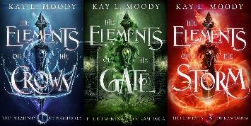

Books by Kay L. Moody
The Fae of Bitter Thorn
The Elements of Kamdaria
The Elements of Kamdaria EPISODES
This series was originally published as short episodes. The series above (The Elements of Kamdaria) includes these same stories, but they are packaged as bundles and read like full-length books. Most readers prefer to read the bundles (above). But you can also get the individual episodes (below).
1: Ice Crown
2: Wind Crown
3: Dust Crown
4: Flame Crown
5: River Gate
6: Smoke Gate
7: Vine Gate
8: Ember Gate
9: Water Storm
10: Air Storm
11: Earth Storm
12: Fire Storm
Truth Seer Trilogy
1: Truth Seer
2: Healer
To receive special offers, bonus content, and info on new releases, sign up for Kay L. Moody’s email list! You’ll also get this story for FREE. Winds of Flame is a short story companion to The Elements of Kamdaria series. Manipulate the elements. Do an illegal job. Save a life. It’s all in a day at Kamdaria’s finest academy.
The Elements of Kamdaria Episode 1
The competition could save her life…
But only if she wins.
Talise can manipulate the elements with ease; water, air, earth, and fire all bend to her will. As a citizen of the Storm—a crime-laden land where death is the only constant—her only chance for a better life is to become Master Shaper.
A competition for the position takes place at the end of her training years. If she wins, she would live in the palace, work for the emperor, and escape her inevitable death in the Storm. But she’s not the only one with a chance to win.
Aaden is another talented student. As a citizen of the Crown, he was born with unlimited privilege and resources. When someone from the Crown wants to win, they do. End of story. And his shaping is unlike anything Talise has ever seen.
Complicating matters, Talise’s loved one in the Storm gives her reason to abandon the competition altogether, forcing her to make an impossible choice.
Torn between duty and freedom, she must learn that clinging to the past, might destroy her future.
Publisher’s Note: This book is a work of fiction. Any references to historical events, real people, organizations, or locales are used fictitiously. Other names, characters, places and incidents are the product of the author’s imagination or used fictitiously and any resemblance to actual persons, living or dead, business or government establishments, events, or locales is entirely coincidental.
Ice Crown
The Elements of Kamdaria Episode 1
By Kay L. Moody
Published by Marten Press
3731 W 10400 S, Ste 102 #205
South Jordan, UT 84009
© 2019 Kay L. Moody
All Rights Reserved. No portion of this book may be reproduced, stored in a retrieval system, or transmitted in any form or by any means, mechanical, electronic, photocopying, recording, or otherwise, without written permission from the publisher, except as permitted by U.S. copyright law. For permissions contact: help@martenpress.com
Cover by Germancreative-fiverr
Edited by Deborah Spencer
The Elements of Kamdaria, episode 1
Ice Crown
Kay L. Moody
ONE
IT WAS AN HONOR TO TRAIN AT the academy.
Talise recited the words to herself over and over again as she stood stiff-backed in the crowded deck of the riverboat. If chosen, she’d be ripped away from the home and family she loved. She’d leave behind the life she knew. All to train at the academy. An honor.
It didn’t seem so great to her.
A stuffy, humid heat hung thick in the air of the lowest deck. The lowest deck had no windows, offering no sunlight and no view of the river to help with seasickness. Two small lanterns hung from the ceiling, each giving off a flickering glow. Whenever the boat jostled, several people were thrown off balance.
Marmie gripped Talise by the shoulders, tucking her into the corner where no one could hurt her. The top of Talise’s head only barely reached Marmie’s elbow, which meant she couldn’t do much to free herself from the corner. Instead, she folded her arms over her chest and pouted. They’d been saving for this trip for months. Two years really. They had always known it would lead here. She always imagined it would be less stuffy and more exciting.
Most people from the outer ring of the continent—or the Storm as it was usually called—couldn’t shape. Talise had the ability to mold and manipulate elements while most of her neighbors in the Storm could only worry about their next meal.
The academy would be safer than her harrowing and vicious life in the outer ring. She never wanted to live in the Storm, but she didn’t like the idea of being away from Marmie either.
“Almost there,” Marmie said, her voice like honey and sparkles. She looked down at Talise and gave her a smile that was meant to ease fears. It helped a little but not enough.
Especially because the riverboat jostled again, and a heavy-set man lost his balance, nearly toppling Marmie to the ground. Talise let herself be tucked behind Marmie’s skirts after that. This time with no complaint.
She didn’t understand why they had to ride in the lowest deck at all when both the higher decks had plenty of room. At least up there she could feel a
misty breeze on her face and smell the wet soil.
Truthfully, she did know why they stood in the lowest deck. It was the same reason they didn’t have enough food and couldn’t learn to read. They were from the Storm. They were the lowliest members of the continent of Kamdaria: criminals, thieves, murderers.
Once people were sent to the Storm, they never left. Even if the original crimes had been committed ten generations earlier, people still never left the Storm. They never left because life in the Storm required crime.
It required stealing from trade wagons just so there would be a slice of bread for dinner. It required threatening guards so they wouldn’t torment a neighbor. It required saving rainwater just so there would be something to drink after a day of labor.
Why it was illegal to save rainwater didn’t make any sense to Talise. No one from the Storm could shape the water, so it was far from dangerous. It just seemed like another way to control the people. Another way to force people to commit crimes, which then forced them to stay in the Storm. Where they belonged.
People never left the Storm. Never. Especially not children who were seven years old.
Unless they got into the academy.
Talise sighed. Marmie had been saying they were almost there for the last twenty minutes. Maybe she’d be right at some point.
A toddler’s sharp shriek broke through humid air of the deck. The mother looked mortified as she tried to appease her child with promises of what they would see when the riverboat stopped. Cherry tree blossoms and green-tiled buildings. Fresh air and gravel on the streets. Only small glimpses of mud instead of big mounds of it.
The toddler didn’t find any of these satisfactory. The heavy-set man gave the mother a hard glance, and he wasn’t the only one. Everyone shifted to move away from the child, but that only made him more upset. One man put his palms over his ears looking pointedly at the mother.
“Please Terreth. Please,” the mother begged. “We are almost there.”
The child looked more terrified by the minute as the bodies around him became angrier. His shrieking bounced from wall to wall while his little eyes filled with a well of tears.
As Talise watched the child, she tried to think of a way to help. Not for the sake of the other passengers. They could jump into the river for all she cared.
But the child looked so frightened. He needed a distraction. Something fun.
Talise lowered her body until her hand hovered just above the floor of the deck. She’d been practicing hard, but even a little shaping still required her absolute attention. With narrowed eyes and a clenched jaw, she willed the dirt on the floor to rise into the air.
It took a minute, but soon, little dust particles rose up in a cloud. She clenched her jaw tighter. A cloud wouldn’t do her any good. She needed enough dirt to make something the boy could see easily in the flickering light.
Something he couldn’t miss.
She narrowed her eyes even more. Her stomach tightened with anticipation.
Finally, a solid clump of dirt broke apart, and the little dirt pieces flew up toward her hand. Now she had something she could work with.
Taking a tentative step out from Marmie’s skirts, Talise shaped the dirt so it would hover above her palm. She turned her back to the other passengers and bounced her eyebrows up and down until she caught the boy’s eyes.
When he finally looked at her, he was still shrieking. She gave him a crooked smile and looked down at the hovering dirt. Then, she bounced the dirt until it hovered as high as her head before it fell back down only a few inches above her palm.
The sour expression on the boy’s face hadn’t relaxed, but the volume of his shrieking had lowered. She did it again. This time she wore an expression of surprise as if the dirt bounced of its own accord, and she hadn’t shaped it at all.
The boy quieted mid-shriek as his eyes opened wide. Now that she had his full attention, she shaped the dirt until it formed a long line. It didn’t look much like the snake she was going for, but it was close enough.
She had to pull her stomach muscles in tight as she moved the line of dirt to look like a snake slithering. Again, it didn’t look as neat as she wanted, but this was probably the first time in his life the boy had seen a citizen of the Storm shaping. He was more than mesmerized.
After the snake, Talise tried a bird. Her epic failure of that produced a giggle from the boy, who then clapped his hands and said, “More!”
Before she could think of something else to make, the riverboat floated to a stop. Talise made the clump of dirt bounce a few more times while the other passengers unloaded. When no one was left in the lowest deck besides her, Marmie, the boy, and his mother, Talise finally let the dirt fall to the floor.
“Thank you,” the mother said, lowering her head so she could be eye level with Talise.
After Marmie poked her in the back, Talise remembered to respect her elder.
Lowering her head in a short bow, she said, “You’re welcome, ma’am, but it was nothing.”
“Are you going to be tested for the academy?” the woman asked.
After Talise nodded, the woman gave a smile so genuine it didn’t seem possible for someone from the Storm. She wiped a bead of sweat off her forehead, leaving behind a short streak of dirt. “A shaper from the Storm,” she said, shaking her head with disbelief. “I never could have dreamed of something so wild.”
Marmie nodded to the woman and started nudging Talise forward. “Come.
The testing begins soon.”
“Wait,” the woman said. “I just wanted to say how special you are. You made my son laugh when everyone else just scowled. And you’re a shaper from the Storm. You’ll change Kamdaria for the better, my dear. I’m sure of it.”
TWO
TALISE’S HEAD BOUNCED RIGHT TO LEFT AS she tried to soak up her surroundings. They had arrived in the middle ring of Kamdaria—better known as the Gate.
The streets were gravel just like the woman on the riverboat said they would be. There were no clouds of dust as people jogged past. A few people pulled wagons, but many of them had horses. Horses! Every so often, a stagecoach would fly past, and Talise’s mouth would drop all over again.
The stores looked bigger than they did in the Storm as well. Shop keepers in the Storm were terrified of risk, so they only stocked the absolute necessities.
Sometimes they didn’t even have those, which meant their stores were even tinier and emptier than the ones here in the Gate. These stores had all sorts of items.
And everything was so clean. Marmie had scrubbed Talise’s face a thousand
times that morning and brushed her hair until her scalp seemed raw. Now Talise was grateful for the effort. She only wished her cotton dress were a little less weathered. The ugly patch near her hem seemed infinitely brighter in this light.
At least it was clean.
Even the people seemed different. They didn’t look so worn. So tired. They looked like they could think about something other than the hunger creeping at them from every side.
A man bumped into Marmie as they crossed the street. He looked apologetic
at first until he saw the state of their clothes. He bared his teeth as he jumped away from them. A sharp intake of breath went through his teeth like a hiss.
He muttered under his breath, but the only word Talise could make out was vermin. Nobody liked people from the Storm. Even people in the Storm didn’t like people from the Storm. Now that they had traveled to the Gate, everyone shot them angry glares and suspicious glances.
Marmie seemed oblivious to the entire interaction. Her eyes were set on a nearby building with unpainted walls and a gabled roof with cypress bark shingles.
When they arrived, Talise was ordered to sit on a nearby bench outside the building while Marmie went in and did the paperwork. Not that Talise minded.
She was too busy soaking in more of the Gate. They weren’t even in the inner circle of Kamdaria—also called the Crown—but everything already seemed a thousand times better than the Storm. There was so much water, so much vegetation, so much life.
Her eyes wandered when the sound of a wooden hammer rippled through the
air. She took a few steps down the cobblestone path until she could see inside a courtyard that stood next to the building where Marmie was.
She recognized the scene at once, even though she had never seen anything like it in the Storm. A wooden podium stood at the back of the courtyard with an orange tree on the right and a cherry tree on the left. A man stood behind the podium wearing a red silk hat with a ball and tassel at the top. A judge. A woman sat on a chair next to the podium.
This was a trial. But not a regular trial, a card-marking trial.
The judge had two stamps on the wooden podium in front of him. Talise knew one of the stamps would be of a silver crescent moon and one would be a black X. Judging by the woman’s face, the moon stamp wouldn’t be used today.
The woman clawed at her tunic hem as she chewed her bottom lip. She kept
nodding and shaking her head in answer to someone’s questions. Talise was too far away to hear the questions, and she couldn’t even tell who was talking.
The woman began gulping and didn’t seem to notice when her chewing teeth
drew blood from her lips. All at once, she let out a gasp and her hands flew over her open mouth.
“Guilty!” The judge’s booming voice erupted through the courtyard.
Jumping to her feet, the woman screamed, “NO!”
The judge sneered at her and glanced toward a wooden platform where a dozen people sat. The woman’s family. It seemed the woman had five generations with her. Talise picked out a couple who must have been the woman’s parents. Another man and woman who must have been grandparents.
There were also a few people the woman’s age, probably her siblings. And then, three adults who must have been the woman’s children.
A son and his wife and then a daughter who looked barely eighteen. Most concerning of all was the baby, quietly sleeping in the son’s arms. Since ID cards weren’t given out until a child turned eighteen, any of the woman’s children under eighteen wouldn’t be present.
“ID cards out,” the judge said, pulling one of the stamps off the podium. He held an ink pad in his palm, which must have been black.
“No!” the woman shouted again. “Please don’t. Punish me. Punish me
The judge turned on her as his eyebrows furrowed together. He spoke in a tight voice that was just loud enough for Talise to hear. “You dare question the laws of Kamdaria?” he asked. “It has always been obvious that we care for our children better than we care for ourselves. It is only fitting then, that our punishments should pass to our children as well.”
“But they did nothing wrong.” The woman had lunged from her chair and reached so desperately for the judge that two guards had to hold her back. “My son’s baby is just a newborn. She won’t survive winter in the Storm.”
The judge whirled around to face the woman. “Then you will suffer knowing
what fate awaits them and knowing your actions brought them there. That is the greatest punishment there is.”
“Please, she’s just a baby. Please. I beg you.” The woman’s face had been pressed into the gravel by one of the guards, but it did nothing to stop the words spewing from her mouth.
The judge ignored the woman as he traipsed over to the wooden platform where the family members sat. They all had tears streaming down their cheeks.
One of the older women was convulsing as her body shook with sobs.
But none of them protested. They knew the laws of Kamdaria. The card system had been implemented centuries ago and since then, crime was almost non-existent except in the Storm. People could hurt themselves easily, but no one wanted to force their children and children’s children to bear a punishment they themselves deserved.
A perfect system. Supposedly.
The son clutched his baby closer as he held his ID card out to the judge. A look of resignation paired with his dwindling tears. His wife wore no resignation. Instead she buried her face in a handkerchief and couldn’t look as the judge stamped her card with a black X.
The barely eighteen-year-old daughter had eyes so wide someone could walk
straight through her irises. She gasped when the judge stamped her card, as if it wasn’t real until that moment.
When the son, his wife, and the daughter all had their ID cards marked, the judge waved at a nearby guard. “Take them to the docks immediately. A riverboat will be leaving for the Storm soon.”
“Now?” the son asked. He gripped his wife around the waist with one hand and clutched his baby to his chest with the other. “Don’t we get to say goodbye to our friends?”
“No,” the judge said without a shred of sympathy.
“What about our things?” the wife asked. “We need the baby’s sleeping mat
and her books.”
“Books?” The judge let out a laugh that shook through the courtyard.
“Children in the Storm are not taught how to read. You’ll get none of your things. You’ll start life the same as everyone who has been sent to the Storm.
With nothing but the clothes on your back.”
“Mama,” the eighteen-year-old girl called out. Her voice wobbled as reality seemed to hit like a brick on her vocal cords.
The wife began trembling. The son gripped his family more desperately, but he seemed to realize his grip wouldn’t save anyone from anything now.
As if sensing their fear, the baby let out cry. When his family only sobbed in response, the baby cried harder.
“Talise.”
Talise jumped at Marmie’s quiet voice. “It’s time for you to come in now.”
Marmie spoke in a whisper with her eyes on the family that was in the midst of falling apart. She tugged Talise by the elbow, not taking her eyes away from the courtyard until they stood in front of the building where the testing would occur.
Just when Marmie touched the door handle, she turned to Talise with misty eyes. Her mouth quivered, but Talise already knew what she was going to say.
“I know,” Talise said. She tried to set her jaw the way Marmie did when she had won an argument. It made Marmie look powerful. Talise needed some of that power now because Marmie’s unspoken words were just as heavy as the scene in the courtyard.
Unless she sought an early death, Talise had to get out of the Storm. Honor or not, the academy was her only chance.
THREE
THE ROOM SEEMED TOO HOT FOR THE spring air outside. Maybe it was
nerves or maybe it was the little balls of fire that would erupt from a hand every few minutes.
A woman guard in a yellow silk tunic and black belt ushered Talise and Marmie into a corner of the testing room. She didn’t say it, but it seemed like the woman was trying to hide them.
Children about Talise’s age stood in different parts of the room. One girl wore an expression coursing with excitement. One boy kept tapping his feet together before he would grab his mother by the waist and give her the world’s shortest hug. But it would only be a moment before he did it again.
Another girl was showing off for some of the other children. She could shape two elements. All of them would be able to shape all four elements by the time they finished the first stage at the academy, but for now, shaping more than one element was impressive. The girl tucked her hair behind her ear before she moved a tiny pile of dirt and then blew off the top of it with air. The other children clapped in delight.
Scanning the room, Talise guessed she was one of the youngest children. She was only seven when most of them were probably eight. She was probably the thinnest too thanks to the Storm. If she weighed even a few pounds less, she would lose her ability to shape. She had lost it before.
Marmie went three weeks eating nothing but lemon water and breadcrumbs so Talise could have the extra food. Even when the shaping returned, Marmie took smaller portions so Talise could have more.
Another guard wearing yellow entered from the back room. He called a name
from his leather-bound writing pad. Soon, a dark-haired child who looked a full year older than Talise bounded to the middle of the room. The child bowed to his elder.
The yellow-clad guard pointed to a pile of dirt. “If you can shape earth, please move the pile to the spot indicated.”
The dark-haired child shook his head and the guard made a note in his writing pad. Then he said, “If you can shape water, raise the water from this bowl and put it back again.”
The boy shook his head again and a note was made.
The guard pointed to the red and black brocade curtains on the window behind him. “If you can shape air, make these curtains dance.”
The boy nodded, and soon the curtains were fluttering with sharp bursts that indicated shaping.
The guard made another note in his writing pad before he said, “If you can shape fire, produce a small ball of fire above your palm.”
The boy shook his head, and the guard nodded as he made note in his pad.
Then, the guard pointed to the back room. “Off you go. Say your goodbyes, and don’t forget your personal effects.”
The boy bounced over to his parents wearing a smile that must have hurt his cheeks. His parents clapped and gave him so many kisses, his cheeks were probably wet. They strapped a large sack on his back that looked almost as heavy as him.
Talise’s eyes slowly trailed over to the small tote bag she had brought. It only had two dresses, some toiletry items, and a tiny pouch of money. When she scanned the rest of the room, her tote bag looked even smaller.
Biting her bottom lip, Talise sidled up to Marmie and squeezed her hand. “I don’t want to go to the academy without you.”
“I know, love,” Marmie said with a gentle smile.
“Do I have to?”
Leaving no room for interpretation, Marmie said, “Yes dear, you have to.”
Then she added with a bit more kindness. “All the other children will be away from their families too.”
“Where will you go?” Talise asked, bracing herself for the answer.
“I must go back to the Storm.”
Even though she’d been expecting this, the words still jarred on her insides.
“How will you survive? Academy training lasts ten years.”
Marmie took her hand out of Talise’s grip and wrapped it around her shoulders instead. She began tracing swirls into Talise’s upper arm as she spoke.
Her voice was even and sweet, telling the truth, but making it sound better than it was. “The first stage of training is only five years. You’ll have to test again after that to get into the second stage. And you’ll test again three years later. The third stage is only two years.”
Talise nodded, wishing the years could go by as quickly as this day seemed to be going.
Marmie continued. “A child of the Storm is never allowed to leave the Storm
unless he or she becomes Master Shaper. Getting into the academy isn’t enough.
At the end of each year, there’s a competition. Based on the demonstrations during the competition, Emperor Flarius chooses one Master Shaper from the graduating class to work with him in the palace. You must become Master Shaper or else you’ll have to go back to the Storm after your academy training.”
“I know all that,” Talise said jutting out her bottom lip. “I know what I have to do. But if I pass all the testing and make it through all three stages and win the competition and become Master Shaper…,” she bit her bottom lip again, looking up at Marmie, “will you be able to move to the palace with me?”
“You already know the answer to that,” Marmie said with the smallest wink.
Talise’s stomach sank all the way down to her toes. She did know that already. She’d asked these questions a hundred times in the last few months wishing there was any other way. It didn’t help her nerves at all.
Her entire future rested on the competition. How could she feel anything but anxiety skewering her muscles when so much depended on this?
Marmie met her eye and put two fingers under her chin. “You’re the best shaper here.” Then she shrugged with a tease. “Even if you weren’t, they aren’t testing how good you are at shaping. You only need to show that you can. Any child who can shape is welcome to the academy for the first stage of training.”
Again, she knew all that, but it helped to hear the words anyway. Talise tucked herself closer to Marmie’s side, wishing they had a little more time.
Maybe just a few more days.
Mercifully, time went by slowly as the guards tested each new child, let them say goodbye, and then followed him or her into the back room to give more instructions about the academy. Hours passed by while more children were tested.
The other children were getting antsy, but not Talise. She drank up every last minute she had. When she felt brave, she’d ask Marmie to tell her a story or recite one of their favorite memories. Marmie always complied with a gentle smile and a reassuring lilt to her voice.
But even as one of the more boring days of her life, time still marched on.
Soon, Talise was the only child left in the room.
The older guard entered and glanced around. Not noticing Talise at first, he checked with the woman guard. They whispered together for a moment until the woman guard pointed to the back corner where Talise and Marmie sat. The air seemed to grow hotter and thicker. More anxiety trampled through Talise as she tried to hold her head high. She wanted to be brave for Marmie. She knew what
The guard nodded and went to his usual place in the middle of the room where he called out her name, almost with a grimace.
Talise walked over, pinching folds of her dress between two fingers before releasing them again. She took a deep breath when she reached the center of the room. After a quick bow and a long gulp, she looked up at the guard.
He stared down at her, surveying every inch of her tattered clothes. His eyes landed heavily on the bright patch near her hem. He looked back at Marmie and scoffed loudly. Slamming his writing pad shut, he looked at the other guard.
“Tell them we’re done here. They can take the children to the docks now.”
FOUR
TALISE TOOK A STEP BACK WHILE MARMIE took a step forward. Talise
clutched at her dress. All of the softness in Marmie’s face hardened to jagged lines. Her cheekbones cut like knives. No more honey and sparkles. When Marmie spoke now, her voice was fire.
“She can shape. You are required to give her entrance to a training academy.”
“Don’t be stupid, vermin,” the guard said as he peered down at Marmie. “No one from the Storm can shape. How did you even get enough money for the riverboat? Did you sell your hair?
He and the other guard glanced at each other before bursting into a fit of laughter.
Marmie reached for the frizzy ends of her hair, all uneven and dull. At the last second, she turned her hand into a fist and set her jaw. “Test her,” Marmie said.
The guard began walking toward the back room, still letting out the whispers of a laugh.
Marmie stood in front of him leaving only a few inches between them. She crossed her arms over her chest and said more firmly, “Test her.”
“Get out of my way,” the guard said, brushing her to the side.
With such weak muscles inside her, Marmie staggered at the man’s touch. She gripped him by the forearm to catch her balance and tried to steady herself.
Talise wrung her hands all around each other as she watched the pair of them.
Perhaps the guard only needed to see that she was capable of shaping. Maybe she should just show him what she could do. But she feared disrespecting her elder. He clearly had a prejudice that ran deep. Would shaping get them into more trouble?
When Marmie steadied herself, she said, “The girl can shape. You must test her.”
The guard moved to push her away again, but with greater force this time. To protect herself, Marmie grabbed his arm.
The guard ripped his arm from her grip. “You dare attack me?”
Even though it was clear an attack was far from her mind, Marmie narrowed
her eyes. “I’ll do whatever it takes to make sure this girl goes to the academy.”
The guard moved so swiftly, Talise didn’t realize he had Marmie by the wrist
until he was already reaching for the wooden baton under his tunic. If Talise didn’t do something, Marmie would be beaten. Her frail body couldn’t handle a beating of any kind right now.
“Stop!” Talise shouted.
That only seemed to add fire to the guard’s flame. He pulled the baton out while a hint of glee passed over his features. If she was going to do anything, clearly words would not be enough.
She took one glance around the room and did the only thing that seemed logical in the moment. Many people considered fire to be the most difficult element to master, so she lit a fire in her palm.
Thinking only of Marmie’s safety, Talise took a fistful of the guard’s tunic.
“Look,” she said as she forced him to turn around.
As his feet moved to face her, the tunic in her left hand collided with the flame in her right. Her eyebrows flew up her forehead as the silk fabric caught on fire. The guard let out a gasp that could have fluttered the curtains as much as air shaping.
Talise shaped away the fire in her palm instantly, but the damage had been done. The guard seemed too surprised, or angry, to react to his still burning tunic.
Though less than a second had passed, it felt like five hundred. Talise scanned the room, letting her mind whirl as it tried to find a way to fix this.
I’ll never go to the academy now, she thought. I won’t even go back to the Storm. They’re going to kill me here and Marmie too.
She looked at the curtains. She could pull them down and suffocate the fire.
No, she’d never be strong enough to rip them away. Useless. Her tote bag of dresses was closer, but the fire might be out of control by the time she got a dress out of it. Also useless. The bowl of water for shape testing would work. Her foot had already taken a step before she realized that even that would take too much time. The bowl was on the other side of the room.
Without a single thought about the consequences, Talise used her shaping to raise the water out of the bowl and splash it onto the guard’s tunic. The fire was out, and it had only taken the longest three seconds of her life.
Before she could let out a breath of relief, the guard’s mouth dropped. It looked more like surprise than anger this time, but now she was all too aware of just how wet the guard’s clothes were.
The guard worked his jaw up and down as he looked from his shirt to the empty bowl and back to his shirt again. He touched the damp fabric as if daring
But it was real. Talise’s stomach sank. She had to do something. “I can fix it,”
she said. The words sounded so stupid as soon as they left her mouth. She turned her head to the ground, afraid to make eye contact. “Well, not fix it. At least not the fabric that got burnt. But I can help with the wet clothes at least.”
The guard took a step away from her, his eyes widening every second.
Undeterred, she raised her hands until the palms were an inch over the wet fabric. Then, she shaped as much air as she could to blow against the fabric. If only she were a little better at shaping, she could just shape the water out of his clothes and back into the bowl. Instead, the air shaping would have to do.
The guard took another step back and grabbed both of her wrists. He stared down into her palms with his mouth gaping open. “You … you can shape three elements? How is this possible?”
“Four,” Marmie said. Her breath was weak, but she was still on her feet.
The guard turned to her and shook his head.
Marmie stood a little taller and set her jaw. “Not three, she can shape four.
Show them, Talise. Do the snake like you did on the boat.”
Talise was back to pinching the folds of fabric in her dress. The guard was astonished? Not angry? Maybe he was still both, but the astonishment seemed to be winning at the moment. Would shaping something fancy get her into more trouble?
Marmie gave her a gentle nod, and the lines around her eyes softened to the face Talise knew.
With a gulp, Talise moved her hand toward the pile of dirt in the center of the floor. She pulled in her stomach muscles and tried to work past the anxiety threatening to smother her. As the little snake started to take shape, the woman guard took a step forward with eyes full of wonder.
“Of course she will have place at the academy,” the first guard said as he touched the burnt hem of his tunic. “I’ve never seen a child with such advanced shaping.”
The woman guard brushed a strand of hair behind her ear. “She shouldn’t train at any of the academies in the Gate. She should go straight to the elite academy in the Crown.”
Marmie gave a smug grin, but Talise’s insides were bubbling over with excitement. “If I train there, will I finish sooner?” she asked.
“No,” the first guard said as he opened his writing pad. “Training always takes ten years, but it will be more advanced at the elite academy. I’ll have to
write a special recommendation for you, but you should get in with no problem.”
That wasn’t exactly the news she wanted to hear, but it didn’t take away any of her excitement. She did it. She was going to the academy.
“Say your goodbyes,” the guard said, his eyes still on his writing pad. And with those words, all the excitement was sucked up and out of her body, leaving nothing but a pit in her stomach.
Marmie brushed the hair out of Talise’s face as she set the strap of the tote bag on her shoulder. “Work hard,” Marmie said.
“I’ll write to you.” Talise’s lip quivered. “Every week.”
Marmie brushed her thumb under Talise’s chin, giving her a smile. “And I’ll write to you. Twice a week.”
“What if I forget your face?” Talise bit her bottom lip to keep it from quivering again. She knew she had to go to the academy. She knew she needed it. But why did it have to mean leaving Marmie? Why couldn’t they go together?
“You’ll never forget my face as long as you love me,” Marmie said with a laugh.
“But what if I do?”
Marmie bent down to leave a soft kiss on Talise’s cheek. With her head still bent, she whispered into Talise’s ear. “You must try. You must promise that you’ll do your best to become Master Shaper. You can’t entertain any thoughts of rejoining me in the Storm.”
It pained her more than anything else that day, but Talise knew what she had to say. She put both her hands on Marmie’s cheeks and said, “I will try. In ten years, I’ll be the best shaper Kamdaria has ever known.”
FIVE
TEN YEARS LATER
MRS. DEW ALWAYS POINTED TO THE SLATE board as if it held the key to
life’s mysteries. Talise preferred the academy lessons that included actual shaping. Mrs. Dew had taught them nothing but theory for the past month. It didn’t seem very smart when the competition was only a month away, but Mrs.
Dew had been the top instructor at the elite academy for twenty-five years. Her methods weren’t up for debate.
Talise sighed and started shaping little bursts of air from her palm. The bursts reached just high enough to tickle her hair before they would fizzle out.
Mrs. Dew slapped her palm against the slate. “That is why you must never attempt to freeze water while you’re shaping it. You’ll give yourself hypothermia and your fingers could break clean off.”
She emphasized the point by making some gesture with her hands. She was probably miming her fingers falling off, but since Talise sat in the back of the classroom, she couldn’t tell for sure.
Talise pulled a letter from the front pocket of her school uniform. Her latest letter from Marmie. She traced a finger over her favorite paragraph, trying to carve the words into her mind so she’d never forget them.
Anyway, I’m sure you don’t care about all that, but the point is it worked! I finally grew a flower in the Storm. I’ve learned a lot from living here, and the most interesting thing is this: without hope, people have nothing. They aren’t happy; they don’t live. But the smallest things can change that. You should see what this little flower has done to the neighborhood. It’s like there’s magic all around us now.
Magic. Talise loved that part. Marmie had never sent such a happy letter in the ten years since Talise had gone to the academy. Maybe it was just because the competition was so close. Talise knew Marmie never expected to live long enough to see Talise compete. But she had. Just like magic.
Talise had saved just enough money for a riverboat ride from the Storm to the Crown. Soon, Marmie would use it to travel to Ridgerock Palace for a temporary
visit. Long enough to see Talise in the competition.
After several more slaps to the slate board, Mrs. Dew released them for lunch.
Talise bowed to the portrait of Emperor Flarius as she left the room. His golden crown never seemed oppressive to her, but every so often, his eyes did.
Shrugging away the feeling, Talise went through the doorway to find Wendy.
Just outside the classroom, Talise bumped into a student whose eyes were on the ground. He had light brown skin and a thin mustache and goatee. He held his shoulders back with an easy confidence that usually came from those born in the Crown. Aaden. At least she thought his name was Aaden.
Earlier that week, all the top students in the final year of the third stage were combined into one class. Students from academies all over Kamdaria were now in one class at the elite academy, and Talise only knew a handful of them. Based on his demeanor, she guessed he came from another academy in the Crown.
“Sorry about that,” Talise said as she passed him.
Aaden scowled as he trudged past her.
Rude.
Marmie would have scolded her for making such a harsh judgment. As Talise
wandered down the hallway, she opened her mind to other possibilities. Maybe he was nervous about being at a new academy. Maybe he just needed a friend.
Talise finally found Wendy at the end of the hall. She was checking on a pastry in her school bag. “Just a little something to add to my lunch,” Wendy said as she looked away with a smile. They walked side by side as they headed for the dining courtyard.
Luckily, the academy paid for their lunches or Talise might never have eaten.
Marmie sent her money as often as she could. And Talise always sent it back, except when she was desperate. The academy also paid for her school uniforms.
They spent so much time in training, no one ever realized Talise only had two dresses apart from her school clothes. Her other possessions were fewer than the fingers on her hands.
“Fish again?” Talise asked as she wrinkled her nose. Fish always reminded her of the Storm.
Wendy giggled and tugged her through the gate. “What do you expect when
we live so close to the palace? Ridgerock Lake is full of fish.”
Talise scowled, not caring if Wendy noticed how her feet were dragging.
Wendy did notice. She shot Talise a disapproving look before erasing it with a smile. “At least there’s noodle soup to go along with it. You love the noodle soup.” Her eyebrows teetered upward, begging Talise to agree.
Unable to stop herself, Talise let out a chuckle. “Yes, I do like the noodle soup.”
Wendy always had a way of scolding without making it feel like a drudgery.
Just like Marmie. Talise had been drawn to Wendy for that exact reason. Wendy was sweet and gentle like Marmie.
“And look,” Wendy said, bouncing on her heels. “They’re even serving the soup in the round bowls instead of the square. You love the round bowls.”
Talise shook her head but let out another chuckle. “I don’t love them. I just think they’re easier to hold. And I only said that one time.”
After receiving their food, Talise quickly scanned the courtyard for a place to eat. One end of the courtyard looked empty except for a single person. Aaden.
Maybe she had been right about him needing a friend.
“Do you know him?” Talise asked, pointing to the lonely young man.
Wendy nodded. Of course she did. Wendy knew everyone. It was part of her
charm.
“Aaden,” Wendy said. “He’s from the other academy in the Crown.”
“Let’s go sit with him.”
Wendy’s eyes widened, but she tried to smile the expression away. “I don’t know him that well.”
Talise started walking toward him. “Maybe he doesn’t know anyone in the new class. We should be friends with him.”
Wendy blinked and glanced around the courtyard. “Maybe he wants to be alone.”
Talise gave her friend a sideways glance. Usually Wendy was the one who wanted to make new friends.
“Look, there’s Claye over there. Let’s go sit with him.” Even with her hands full of dishes, Wendy managed to nudge Talise away from that part of the courtyard.
“What are you grinning about?” Wendy asked as she settled into the seat next to Claye.
His brown eyes looked bright with a joke that would probably befit a ten-year-old boy. “I just slurped my noodle the wrong way and it came out my nose.”
“That’s disgusting.” Talise tried not to think about it too much or she wouldn’t be able to eat anything at this meal.
Claye snickered, seeming to care even less than usual about her opinion.
“And,” he said rounding on Wendy. “Mr. Cobble confirmed that training the day
before a competition can weaken your muscles.”
Wendy stiffened before she shook her head firmly. “Only if you train too much. Surely, no training at all hurts more than it helps.”
Talise idly put the spoon to her lips as Wendy and Clayed jumped into a deep discussion on which was best. They both had compelling arguments that had been picked apart in detail over the last year by every student in the final year of the third stage.
Right now, Talise was more captivated by the young man who stared at the ground and ate alone. So quiet. If he had so little to say, he must have had mountains of things going on in his head.
What secrets did he hold?
SIX
WHEN TALISE FINISHED THE LAST OF HER noodle soup, she pushed the
plate of grilled fish over to Wendy and Claye. “You two share this,” she said as she stood up.
She cleaned her soup dish at the washing station and watched Aaden as she
worked. His neatly trimmed hair had been combed with precision. The black strands were so shiny, they gleamed in the sunlight. His clothes hung stiffer than hers, which could only mean his school uniform had recently been pressed.
He was definitely from the Crown then. Only someone from the inner circle
of Kamdaria could afford such a luxury. She didn’t know whether to be awed or angry by how casually he broadcasted his privilege.
Instead, she focused on the one thing she knew for sure. He ate his entire lunch alone. Someone like that must have needed a friend. She tried to smile with the same warmth Marmie had taught her as she headed his way. He stood up even before she got to him, as if eager to avoid any interaction. Hopefully, he only wanted to avoid her because he was nervous.
“I’m Talise,” she said when she reached him.
Aaden gave her a short glance through the side of his eye. “I don’t care.”
She raised an eyebrow.
He began marching toward the washing station, and his body language didn’t invite her to join. But she did anyway. Her lips twitched at the corners while she tried to decide if she should be offended or humored by his brash words.
Not funny, she finally decided. But maybe he only pushed her away because he was nervous. Attempting a friendly smirk, she asked, “Is that how you greet everyone?”
“No,” he said with utterly no explanation at all.
They had reached the washing station now, and Aaden kept his eyes down as
he scrubbed his dishes clean.
Everything in her told Talise to give up. This young man smelled like trouble and it wrinkled her nose even more than the grilled fish had. She wanted to walk away. She almost did when some of Aaden’s washing water splashed onto her. It didn’t seem like an accident.
But then she remembered Marmie and the Storm. She knew desperation when
she saw it. It looked like anger when it was really fear. It looked like hatred when it was really sadness. One more time, she thought. I’ll try one more time to befriend him.
Talise shaped the splashed water out of her clothes and back into the washing bin. “What’s your primary?”
“Fire,” Aaden said, putting as much heat into the word as an actual flame. He dropped his clean dishes onto the pile and whirled around to face her. “Just like you.”
Such simple words. How did he make them sound like a threat?
Her lips parted as their eyes met. With his earlier words, he had pushed her away. Now, he practically begged her to respond. For once, she had no idea what to say.
How did he know her primary? What else did he know about her?
She opened her mouth to ask, but his eagerness for a response evaporated. He turned his back on her and said, “Leave me alone.”
He stalked off with his shoulders hunched forward and a fist forming in one hand. For a moment, she almost followed him. His anger only made her think he was really desperate. For something.
The only thing holding her in place were those words he spoke that felt like a threat. Just like you.
If he was so quick to threaten, maybe it was because he felt threatened by her.
Maybe he wanted the title of Master Shaper. Talise had been the top of her class for so long, she couldn’t even remember what real competition felt like.
This, she thought. It feels like this.
* * * * *
TWO WEEKS LATER, Talise rummaged through the books in the library. All she needed was a book that classified the different wind types. If she could just understand where the different types of wind came from, it would be easier to shape air in the same way.
She almost rolled her eyes at the thought. Apparently, Mrs. Dew had been right about theory. It really did help with technique.
Biting her bottom lip, she opened another air book. She slammed it shut a moment later when it showed the same diagram the rest of the books showed.
Air shaping must come from the lungs. She knew all that. It didn’t help her understand wind any better.
The golden spine of another book caught her eye. The title looked promising.
Air Shaping Origins. Before she could grab it off the shelf, a clatter from a nearby aisle caught her attention. She peeked around the bookshelf, expecting to see one of the younger students. Instead she saw Aaden.
She’d avoided him since their brief conversation. Not that it had been that hard. Aaden stayed away from her and everyone else. She learned that Wendy had already tried to befriend him and had failed as miserably as she had.
Aaden crouched over a painting of Ridgerock Palace that was supposed to be hanging on the wall. He glanced around from one end of the room to the next.
Without thinking, Talise hid herself behind the bookshelf and then peeked out again.
Thinking he was alone, Aaden bent over the painting and ran a finger over the cherry trees standing like sentinels at the main gate of the palace.
After studying the painting, he did the unthinkable and pulled the painting from its frame. The canvas stretched as he rolled it up tight. He then stuck it into the jacket of his uniform.
Talise’s mouth was still hanging open when he left the library. He didn’t even bow to the emperor’s portrait on his way out. Her brain was busy processing what he had done, but it didn’t stop her feet from following. She put enough distance between them to not seem suspicious, but her ears were hyper aware of each of his movements.
He left the instructional building and flew through the gardens to get to the training building. She almost lost him when he made two sharp turns in the halls of the training building, but she found him again a moment later. He had settled into an empty training room that was a little smaller than the others. It stood in the back corner of the building. That, combined with its small size, meant hardly anyone used it.
Aaden had shut the door when he entered, but Talise managed to push it open slightly without his notice. He was too busy propping the painting up on a desk.
He traced his fingers over the cherry trees again. The pink blossoms burst out of the branches like little clouds of delight. He stared at the painting for so long, Talise was ready to give up and just tell Mrs. Dew how he had stolen the painting from the library.
Just when she lifted her foot to walk, Aaden took a step away from the painting and a fire burst out of his palm. The fire burned in a column, but little by little, bits of the column drifted away, and a tree began to form.
Fire sculpture.
When the tree was formed, it grew larger until it burned as high as Aaden’s
chin. Then, he stared at the tree like a mother coaxing her baby to eat. When his eyes narrowed, the branches of the trees seemed to shudder. He clenched his jaw and one branch seemed to grow small pustules.
As impressive as it was, that didn’t seem to be what Aaden wanted. The fire vanished as he dropped his hand away and let out a groan. He kicked the wall twice and then did it again, all the way down to the pustules.
It didn’t matter if he was doing what he wanted or not, fire sculptures were hard. His were detailed and looked as though they were alive. On his fourth try, one of the pustules popped open and a blossom appeared.
Talise gasped.
She couldn’t help it. She had no idea he was attempting something so complex.
Aaden’s tree vanished as he whirled around to face her. His lips were pressed to a thin line while a huff of air burst from his nose. He worked his jaw up and down as he shaped a fireball in each of his hands.
The balls flew toward her, and she leapt back with a yelp. One of the balls hit the cement wall, but the other hit the door right next to her arm. It was close enough that it burned her forearm.
Aaden glared at her as he formed two more fireballs in his hands. Not needing anymore encouragement, she ducked away and ran out of the building.
With the fresh air blowing on the burn, the stinging decreased. She went straight for the kitchen building, hoping to find some ice. Even with such a direct mission, she could barely focus on the burn.
Aaden’s trees.
They were incredible, she had to admit it. And to emulate the same trees that stood in front of the palace was a stroke of genius. It was sure to catch the emperor’s eye.
The reality settled into her, leaving her insides a writhing mess. Aaden had a chance of winning Master Shaper. Maybe a better chance than her. Who was she kidding, he had a way better chance than her.
Just like anyone from the Crown, he had everything he ever needed without
even blinking. That’s why most people from the Crown didn’t care about becoming Master Shaper. They didn’t need it.
But when someone from the Crown wanted to become Master Shaper, they did. End of story. Aaden probably had a personal shaping tutor that had been teaching him for years.
Talise had spent the past ten years keeping her promise to Marmie, training
hard with the intent to win. She’d been the best for so long, she stopped worrying about the competition years ago. Everyone knew she was going to win.
And still she never stopped training as hard as she could.
Now, all that hard work fizzled out in just one afternoon. All along, there had been someone just as good as her at the other academy in the Crown.
If she was going to win the competition, she needed to up her game.
SEVEN
THE LAST PARAGRAPH OF HER LETTER TO Marmie seemed a little
ridiculous. Truth laced every word, but that didn’t mean she should send it. But what else could she say? Talise read through it one last time.
He did fire sculptures like I’ve never seen before. Somehow, he managed to get little cherry blossoms to burst out of the fire branches. I’ll admit it, Marmie.
I’m scared. I’ve tried so hard to win, but I think he’s better than me. At least I’m not a child anymore. If I have to go back to the Storm, I’d probably survive now.
And then I’d get to be with you again. That doesn’t sound so bad.
Marmie would be angry. She’d scold and remind Talise of her promise, but none of that changed how Talise felt in this moment. Living in the Storm with Marmie really didn’t sound so bad. Certainly not as bad as it did when she was a child. She was stronger now.
Shaking her head, Talise got a blank sheet of paper to start a new letter. She couldn’t send something like that so close to the competition. Marmie would worry too much.
She had to say something else.
Talise stared at the blank paper for two and half minutes before she gave up.
She added a quick, Please don’t worry. I’m still going to try. to the end of the letter and shoved it into its envelope.
With the letter in hand, Talise left her room to find the nearest academy guard.
“Can you make sure this is sent tonight?” Talise asked the woman.
The woman nodded as she tucked the letter into a hidden pocket of her yellow silk tunic. “Any special instructions?” the guard asked.
“No.” Talise smoothed the bottom of her uniform so she could avoid the guard’s eye. Why did they always have to ask that? She stuffed a hand into her pocket, but it only reminded her of how empty that pocket was. No money for special requests. No money for extra pastries. No money for anything but survival.
Talise gulped as she turned away. How could she forget so easily the challenges of the Storm? She had been in the Crown for ten years, but the challenges still chased after her. They were little things like not being able to
afford a pass to leave academy grounds. Never having anything extra beyond necessities.
But with all her necessities taken care of for ten years straight, it was easy to forget how bad things in the Storm were. Marmie had sacrificed so much to get her here. She couldn’t let that sacrifice be in vain.
* * * * *
LATE THAT EVENING, Talise slipped out of bed still wearing her school uniform. She tiptoed out of her room and held her breath as she walked down a hall where one of the night guards patrolled.
The hall remained empty as Talise tiptoed down it. Just as she was ready to round a corner, she heard footsteps. There were punishments for sneaking around at night, but none of them were worse than losing the competition.
She tucked herself into a supply closet just as the footsteps came around the corner. Who was it? Did they see her?
Talise gripped her elbows. She tried to force herself to breathe, but her lungs seemed to think it would be more fun to hold her breath until she couldn’t stand it another second. Just when she sucked in a loud breath, the door to the supply closet swung open.
Her hands flew into the air in defense. “I was just—” Talise’s words cut off as she blinked. “Wendy? What are you doing here?”
Wendy’s finger flew to her lips as she looked over her shoulder. “I was going to the bathroom,” she whispered. “What are you doing here?”
“Um.” Talise began rubbing a hand up and down her forearm. “I need to train for the competition.”
Wendy let out a snort and a new pair of footsteps started coming from a nearby hall. Her eyes widened as she grabbed Talise by the wrist. “Come on,”
Wendy said, pulling her down the hall. “They always check this closet, but I know another place we can hide.”
“How do you—”
“Shhh! ”
Talise clamped her mouth shut until they were out of that hallway and in the guard’s hallway. When Wendy’s feet began to slow, Talise looked at her seriously. “This is the guard’s hallway. Where the guards check in and get their gear and everything. We can’t hide here.”
Wendy smirked. “Yeah, but they only check in every hour on the hour. This
place is empty the rest of the night.”
“How do you know that?” Talise asked. She stared at her friend’s gentle smile and innocent face. “How often do you sneak out?”
“What?” Wendy asked as she put a hand to her chest. Somehow, she managed
to imbibe each of her words with a sweetness that jarred against the reality of the situation. “I never sneak out. How could you suggest such a thing?”
Talise could only respond with a disbelieving chuckle. “Then what are you doing right now?”
Wendy’s ears turned pink as she looked down at the ground. “That’s different.
I had to go to the bathroom. I hate how they make us take a guard escort. I never sneak out for anything else.” Her lips squished up into a knot as she looked at a nearby wall. “Well, sometimes I do sneak into the kitchens. But only because the headmaster forgets to feed the animals.”
She looked up with a smile but then her ears turned pink again. Looking away, she said. “Oh. There was one time I didn’t turn an essay in on time. But I finished it that night, so I snuck into the teacher’s classroom and put my essay in the pile. But that was only one time.”
Talise wanted to laugh hard, but since the guards were looking for them, she had to keep it to a quiet snicker. “How did you learn what the guards do at night?
I can’t imagine you sneaking out enough to find out.” She cocked her head to the side. “Can you get us to the training building?”
Wendy nodded and glanced around a corner. She waved at Talise to follow her and then she said, “My brother, Cyrus, taught me everything. Do you remember when he was here a few years ago? He got into lots of trouble. Once he graduated, he thought he’d pass his legacy on to me I guess.”
Another snicker escaped Talise’s mouth, but she quieted it when Wendy put a finger to her lips. They were silent through a few more halls, and even more silent through the gardens.
When they reached the training building, they were so used to whispering, they didn’t even notice that they kept it up.
“Why do you have to train anyway?” Wendy asked. “Everyone knows you’re
going to win.”
Talise closed her eyes as she filled her palms with fire. When a cold chill swept into the room, she shaped more fire, but this time inside of herself. Why couldn’t she do that during her demonstration? Shaping fire inside the veins was such a difficult skill, most students never learned it. Sadly, it wasn’t flashy enough for a demonstration, not to mention Emperor Flarius would have no way of knowing fire actually ran through her veins.
Putting that thought aside, Talise focused on the fire in her palms. She shaped each of them to look like the long ribbons that were often used in air shaping demonstrations. “It’s Aaden,” Talise said.
Wendy settled into a corner of the room and pulled out a pastry she had hidden in her robe. At the mention of Aaden, her body shivered.
“He’s going to do a fire sculpture for his demonstration. I saw him practicing.
He’s doing cherry trees, and he’s going to make cherry blossoms pop out of the branches after he shapes the tree.”
Whatever made Wendy shiver before seemed to float away. Her eyes went wide as she popped a piece of the pastry into her mouth. Then she shook her head. “Are you sure he’s not going to make a tree that sort of looks bushy? He can’t really make cherry blossoms pop out of the branches.”
“He can,” Talise said as she shaped the fire ribbons through the air. She moved them the same as people often moved colorful ribbons with wind shaping. The ribbons curled and weaved as if a wind danced with them. She chose this demonstration specifically because it used her primary element of fire, but also because it showed that she knew how to shape air.
Only someone talented with air shaping could understand the movements well enough to move fire in the same way. Except fire was harder to control.
Many people in Kamdaria, the emperor included, believed fire was the most difficult element to master. This demonstration proved she could shape fire with skill, but it also showed off another element she knew well.
“That’s incredible,” Wendy said. “Cherry blossoms popping out of branches.
Fire cherry blossoms. And fire branches. That’s so cool.”
“I know,” Talise said with a frown. “And I have to beat him, so don’t act too impressed.”
“Sorry,” Wendy said, softening her voice. She chewed her pastry slowly, watching as Talise shaped the fire around them.
Talise moved one of the fire ribbons to look like a tornado, spinning down until it nearly kissed the ground. With the other ribbon, she made it whip and whirl above her head in waves. Two completely separate motions moving simultaneously. It was impressive by anyone’s standard. But was it enough?
“He’s going to beat you,” Wendy said. Her voice was so quiet, Talise almost didn’t hear. She wanted to be angry, but Wendy’s words had been uttered with such love, the anger left before it could settle.
Talise let her fires vanish before she dropped onto the floor. With her forehead buried in her palms, she said, “I’ve been training ten years for this.
There has to be something I can do.”
They sat in silence long enough to hear a changing of the guard in the courtyard.
“Make it dangerous,” Wendy said.
Talise looked up as she raised an eyebrow.
Wendy nodded. “Aaden might beat you with the detail of his sculpture, but everybody loves a bit of danger. It will make you impressive in a different way, and it will make you memorable.”
Talise’s head bobbed up and down as she got to her feet. She shaped a long ribbon of fire and swirled it around like a tornado. When it got closer to the ground, she turned it back upward. Before she could reconsider, she held her arm out straight and let the fire ribbon twist around her arm. The heat brought a line of sweat to her forehead, but it didn’t burn.
Slowly, she untwined the fire ribbon from her arm and let it twist around her leg. She had to keep the fire farther from her leg, so it didn’t burn the fabric. The temperature inside her raised even higher, but it didn’t stop her yet.
She raised both hands high above her head and clasped them together. Then
she let the fire ribbon swirl around her entire body.
When she finally shaped the fire away, Wendy clapped with delight. “Now that was cool.”
“It’s pretty hot,” Talise said, wiping the sweat from her forehead.
“Too hot?”
With a shrug, Talise said, “It has to be dangerous to be impressive, right?”
As Talise wiped another line of sweat from the back of her neck, she thought about shaping ice into her veins. The thought of Mrs. Dew’s lesson stopped her in her tracks. She didn’t need her fingers breaking off. Especially not before the competition.
But maybe she could pack ice in her pockets and rub them over her body after the competition. Except if she did that, the ice would melt in her pocket during the demonstration.
It didn’t matter. She’d think of something and make sure she became Master Shaper. She’d have to tell Marmie the good news.
EIGHT
DAYLIGHT STREAMED IN THROUGH THE WINDOW OF the training
room as Talise worked to improve her technique. The competition was only a week away now, and she’d been training during every minute of her spare time.
When the fire ribbons got too close to her body, it would raise her internal temperature just like a fever. But she needed that little bit of danger or else the demonstration wouldn’t be impressive enough. She’d written another letter to Marmie all about her new plan.
This one would work. It had to.
She swirled a fire ribbon around her arm. When it reached her shoulder, she let the ribbon grow longer so it could then swirl around her torso, and down one leg. A cool afternoon air drifted in through the training room door, which felt nice on her heated skin.
Just when Talise made another fire ribbon spin around her from bottom to top, Mrs. Dew walked into the room. Talise hadn’t snuck in this time, but the sight of her teacher still made her jump.
“Mrs. Dew.” Talise stopped shaping immediately as she lowered her head in a quick bow. “What can I do for you?”
To her surprise, Mrs. Dew didn’t answer. Her face remained stoic as she pointed toward the little stools in the corner of the room. One thing did seem different though. The muscles around her eyes looked heavy as if something weighed them down. It made Talise’s hair stand on end.
“What is it?” Talise asked. “What’s wrong?” Terror flashed through her, but the logical part of her brain tried to swat it away. Mrs. Dew always looked serious. That was her default. This expression was no different than usual. Still, something like doom seemed to settle into the walls. Something was wrong.
Talise didn’t know how she knew it, but she knew it.
Mrs. Dew only pointed to the stools again. Without waiting for Talise, she lowered herself onto the nearest one.
Terror gripped Talise by the insides, but she tried to squash it down. Mrs.
Dew probably just wanted to see Talise’s demonstration. She’d been going around to the other students giving advice.
No matter how much her brain worked, by the time Talise sat down across
from Mrs. Dew, she knew this had nothing to do with her demonstration. A faint glisten of tears sat in the corner of Mrs. Dew’s eyes.
At the same time, a lump appeared in Talise’s throat. Her muscles suddenly couldn’t be relaxed, no matter how she tried to soothe them. And when had she started breathing so quickly?
“What happened?” Talise asked.
“I just received word,” Mrs. Dew said, suddenly staring at the ground. She gulped and held her lips together as if unable to force them open.
A rope of ice seemed to tighten around Talise’s heart. Her breathing got deeper, and her muscles got tighter. How many seconds had it been since Mrs.
Dew entered the room? Ten? Twelve? It felt like a thousand. Not a thousand seconds, but a thousand hours.
She knew what was coming. She knew it.
But how could she know it? Mrs. Dew hadn’t said anything about it yet. This conversation could have been about anything. Talise tried to force her mind to consider how ridiculous she was being. Tried and failed.
Her mind had no control now. She was being led by her thumping heart and
the anxiety that seized her muscles. No longer able to calm herself, she held her breath waiting for Mrs. Dew’s words.
“Your,” Mrs. Dew said before she gulped again. “I just received word from one of the guards. Your…”
She paused again as if the words were too much. Too heavy.
Just say it, Talise thought. I already know what you’re going to say, so just say it.
Mrs. Dew closed her eyes and turned away. “Shyna was found this morning
by a neighbor.”
Marmie.
“Apparently she’s been sick the past few weeks.”
Talise’s seizing muscles were replaced by a cold, icy grip. No more thumping heart. It must have stopped. It had to have stopped. Because how could she be alive when Marmie…
“The neighbor was there the night before. He said she fell asleep. When he came back in the morning…”
“No,” Talise said. It was all she could think to say. This couldn’t possibly be real.
“She passed away in her sleep. She probably didn’t feel anything at all.”
“No!” Talise shouted. She jumped off her stool, but then standing there didn’t
feel any better. She had to do something. She had to move, or her muscles would explode.
The stool.
She kicked it over, but it wasn’t enough. She threw it across the room, but that wasn’t enough either. Grabbing the stool again, she heaved it at the wall. It needed to break. Something had to be destroyed. Something needed to break for the impossibility of this situation.
When the stool hit the wall, it bounced to the ground with barely even a dent.
Talise let out a guttural scream and fireballs appeared in her hands. She didn’t really mean to set the stool on fire, but at the same time, she did.
Soon, the wooden stool had burst into flames atop the cement floor. The wood cracked by the heat of the flames. Talise watched until the legs of the stools turned black.
And then she fell to the ground with her face in her hands and wept.
Sobs shook through her. The muscles inside had been weakened by the anxiety that gripped them. Her heart no longer beat, it only fluttered. For some reason, her eyes felt tired.
So tired.
“I’m sorry,” Mrs. Dew said.
Her teacher had never been particularly comforting, but having her arm wrapped around Talise’s shoulders felt nice. Not enough, but nice.
Mrs. Dew said nothing of the burning stool. Instead, she squeezed Talise’s shoulders and let her cry as long as she needed.
It took longer than it should have.
“How did she die?” Talise finally asked. Her voice sounded like the croaking of a frog, but she managed to get the words out.
“In her sleep.”
Talise nodded. “Yes, I know you said that, but what did she die of? Why was she sick?”
Mrs. Dew wet her lips as she looked away.
“Are a lot of people getting it? Is the sickness spreading? A fever? A cough?
What?”
Looking at the ground, Mrs. Dew asked, “Do you know how most people in
the Storm die?”
Blood rushed through Talise’s ears as her heart pounded. Again, the world seemed to freeze while she was forced to deal with these awful truths.
“Malnourishment,” Talise whispered. The same thing that prevented people in
the Storm from being able to shape was also the thing that usually took them away forever.
Mrs. Dew nodded, still unable to make eye contact.
They were both quiet, watching the flames around the stool turn to embers.
“I have to go to the funeral,” Talise said. “I have to leave a mark on her gravestone.” It was the only thing she could do now.
Since the time of Kamdar, the first emperor of Kamdaria, gravestones had been marked by the deceased’s family members. The simple marks honored the person’s life and acted as symbols for the love their family members held for them. The more marks a grave had, the more honored that person was considered to be.
Talise had just enough money to get to the Storm. Not enough to get back, but Mrs. Dew or the school might help with that. They allowed that sort of thing on occasion.
Maybe it was reckless to spend a day of traveling this close to the competition, but Talise didn’t care. She needed this. She had to say goodbye. She had to leave a mark on Marmie’s grave because hers would be the only mark the grave would bear.
“Of course. We have funds for you. I’ll contact the city and find out when they plan to do the funeral.”
“The city?” Talise looked up with a start.
Mrs. Dew nodded. “Yes, the city is doing her funeral.” When Talise stared back at her, Mrs. Dew added, “She didn’t have any family in the Storm, did she?”
Talise turned away as she wrapped her arms around her stomach. Shaking her head, she said, “No. She has no family in the Storm.”
And whose fault is that? she thought.
Talise dropped her head into her palms and began crying again as if she had never stopped. At this rate, she might never stop.
Not until Marmie’s grave bore her mark.
NINE
LETTERS.
They captured the essence of Marmie, but not the smell. They didn’t hold the soft edges of her wrinkled skin or the few gray strands in her hair. How many strands of gray were there now?
Talise hadn’t seen Marmie in ten years. When she first joined the academy, the one thing she feared most was forgetting Marmie’s face. At first, it took no effort at all to recall her sparkly smile and gray eyes. The first few years, it was easy.
And then it wasn’t.
Now she wondered if she had imagined that freckle under Marmie’s right eye.
Or was it her left? Had her lips been full or thin? She never thought to look when she was younger.
Marmie insisted Talise would never be able to forget her as long as she loved her. But she was wrong. She loved Marmie with more heart than she even knew was capable.
And she could barely remember her face.
Talise clutched the letters against her chest and breathed them in again, praying for even the hint of a smell.
Of course it never came. What did Marmie smell like? Now she’d never know. At the funeral, she’d smell like embalming fluid. That wasn’t Marmie. All Talise would really get was to see Marmie’s face again.
Her beautiful face that had sacrificed everything, everything for Talise to be here.
Why did fate have to be so cruel as to let Marmie see Talise get so close to the competition, but not close enough to win? Talise had bought Marmie a riverboat ticket so she could attend. If things had gone according to plan, Marmie would have had one full day of food and rest. It would have been the best she’d felt in years.
And now she was dead.
Gone.
Sand seemed to scrape down Talise’s throat as she tried to swallow. She clutched the letters to her chest as she paced across her bedroom.
How was she supposed to compete like this? How could she focus now?
She swallowed again and brushed an errant tear from her cheek.
She just had to put a mark on Marmie’s gravestone. If she could just leave a mark on the gravestone, then she could focus again. Why was Mrs. Dew taking so long to tell her when the funeral would be?
Talise’s bedroom door opened a crack, and the letters flew through the air as she wrenched the door open. Her arms sagged at her sides when she saw Wendy in the doorway.
Talise turned away and tucked a strand of chin-length black hair behind her ear. “I thought you were Mrs. Dew.”
“Why weren’t you in class this morning?” Wendy asked.
Gulping seemed like a good way to subdue the frog in Talise’s throat, but the sandpaper feeling only got worse. Considering how much she’d been crying, it made sense that her throat was dry.
“I had a, uh… personal…” Why was she trying to be brave in front of Wendy? Wendy was her friend. But maybe if she could be brave in front of Wendy, she could be brave in front of everyone else too. “A personal issue,”
Talise finished with a curt nod.
Wendy’s face had fallen. All the lighthearted laughter in her eyes had been replaced by a shroud of black. “What happened?” Her voice came out higher than usual.
All of that Talise probably could have handled. But then Wendy touched her arm with fingers as cold as ice. In a voice barely above a whisper, she asked,
“Marmie?”
The floodgates released and tears fell down Talise’s cheeks in sheets before she could even nod. Gripping her arms tight around her stomach, she turned away. She felt foolish for crying, but she didn’t know why.
The emotion boiled inside her until it was too much. She threw her body onto her bed and kicked her feet against the mattress as she sobbed. She felt like a child throwing a tantrum, but it didn’t stop her. Nothing could.
Why did this have to be real? Why couldn’t it be a fairy tale where she gained some magic power for going through a tragedy? In reality, all this gave her was the urge to curl up in a ball and never face the world again.
If she couldn’t even keep her cool around her best friend, what chance did she have around the rest of her classmates? Around Mrs. Dew?
Around the emperor?
He’d never understand or forgive her for letting her emotions get in the way
Wendy had sidled next to Talise. She stroked her hair and let her cry. Minutes passed without either of them saying a word. Or maybe it was hours.
All Talise knew was her shoulders still heaved with sobs, but no more tears fell from her eyes. Maybe she’d finally gotten too dehydrated. When the sandpaper coating her throat became unbearable, she sat up.
Wendy sat across from her on the end of the bed. Were those tear streaks on her cheeks too?
“I just,” Talise said as she started twisting a chunk of her hair with both hands. “I just want to go to the funeral and put a mark on Marmie’s gravestone.
If I can just see her one last time, if I can just say goodbye, I know I’ll be okay.
I’ll be able to focus on the competition and do my best like I promised her. I just need to put mark on her gravestone.”
“When is the funeral?” Wendy’s voice came out in a gentle wisp, floating on the air like an air shaping ribbon.
“I don’t know. Mrs. Dew was supposed to find out, but she doesn’t know yet.
She said the city is taking forever to write back. Or maybe the letter got lost in the mail.”
One of Wendy’s eyebrows shot up for a brief moment before it fell back into place. It was such a small expression, but on Wendy, it spoke volumes.
“What is it?”
Wendy seemed to curl into herself. She shrugged her shoulders until they touched her earlobes. “I’m sure it’s nothing.”
Talise sat forward, grabbing one of Wendy’s hands until it was tight between both of hers. “Please, Wendy. It’s my…” Her throat seemed to choke up before the name could escape her lips. In a whisper, she finished, “What do you know?”
Wendy’s eyes were full to the brim with tears. A light flush colored her cheeks as she nodded. Maybe she had been trying to protect Talise from the truth, but she understood now. Talise needed the truth more than anything.
“I think Mrs. Dew already knows when the funeral is. I heard her talking to another teacher. I don’t know when it’s supposed to be, but I think she’s hiding something.”
Talise clasped her hands over her mouth. Her stomach seemed to solidify into a knot with thousands of strands that grew tighter each second. “It’s the same day. What if it’s the same day as the competition?”
“They wouldn’t do that,” Wendy said, forcing her head side to side in sharp jerks. “They wouldn’t wait that long to do the funeral. Especially in the Storm.
Have you ever heard of them waiting an entire week to do a funeral?”
The knot in her stomach loosened one strand at a time. “No. No, you’re right.
Funerals in the Storm usually happen within three days.” With those words, another strand came loose, allowing her to let out a breath. But then, it recoiled, and the knot seemed even tighter than before.
“But then why hasn’t Mrs. Dew told me when it is? What is she hiding?”
“Maybe she doesn’t want you to get distracted from the competition.”
Talise let out a snort. “Too late for that.”
“Is money a problem?” Wendy asked. Her eyes were focused on her fingers
as she picked at her cuticles. “I have a little money in savings if you need a ticket.”
It took everything in her for Talise to keep her mouth from gaping. This was not typical for their relationship. Wendy was from the Gate, so she always had more money than Talise. But even still, Wendy never had exorbitant amounts of money. At least not like people from the Crown.
Another frog settled into Talise’s throat, though she couldn’t figure out exactly why. “Mrs. Dew said the school might pay for the ticket.”
Wendy let out an audible breath of relief that was probably meant to be silent.
Her cheeks turned pink for a moment before her eyes narrowed at a spot in the floor. “Something weird is going on.”
Talise nodded and crossed her arms over her chest. She wanted to scowl too but worried Wendy might think it was about her. For now, her scowling would have to stay in her head.
Wendy twisted her hands around themselves before she spoke again. “My brother told me he used to bribe guards when he wanted information. You know they hear everything. He told me who the trustworthy guards are, who can be bought, and who gives good information.”
A light bloomed in Talise’s heart for only a moment before it was snuffed out.
“I can’t. I only have enough money for my riverboat ticket. If the school doesn’t help, I don’t have anything extra for bribery.”
“I wasn’t suggesting you pay for it,” Wendy said in a matter-of-fact tone. She grabbed Talise’s wrist and pulled them both out the door before Talise could even think about protesting.
Wendy led them out into the gardens where they hid behind a particularly stiff bush. Prying a few branches apart, Talise looked through a small opening in the leaves.
A guard stood in front of a fountain wearing a uniform covered in wrinkles
and dirt smudges. One of the older guards was talking to him, and the younger guard didn’t like what he was hearing.
The moment the older guard stepped away, Wendy pulled them out from behind the bush and marched toward the younger guard. He didn’t notice them at first because he was too busy grumbling under his breath and digging his toe into the dirt.
When they stood directly in front of him, he finally seemed to notice they were there for him. His toe stopped mid-dig as he looked up. He pasted on a cocky smile and shook his hair until it fell into his eyes.
But then, he saw Talise’s face and everything in his expression changed. First his eyebrows shot up, and then he stuffed his hands into his pockets. After a tiny gulp, his cocky expression returned, but nothing about it felt natural now.
“Why did you make that face when you saw me?” Talise asked. “Did that guard say something to you about me?”
“No!” the guard said, a little too quickly.
Wendy placed a hand on his forearm, and his shoulders seemed to relax instantly. She turned her eyes downward so the only way to look at him was up through her eyelashes. “Do you know anything about a funeral for a woman named Shyna?”
The guard seemed mesmerized by Wendy’s honey-sweet voice. After a brief
blank stare, he shook his head and looked away. “No. I don’t know anything about that.”
Talise was ready to grind her teeth into dust, but Wendy seemed to welcome the challenge. She bit her bottom lip and touched the guard’s forearm again. He was too busy staring into her eyes to notice she had retrieved a wad of money from her side pouch.
“What about now?” she said with a playful smirk.
He eyed the money for a long second but then looked back into her eyes. And then back at the money. Without warning, he took a step back and raised his hands in front of himself. “I’m straight now. I don’t do that kind of thing anymore.”
Wendy let out a soft sigh and reached back into her side pouch. This time, an even bigger wad of money lay in her palm. Even Talise’s eyes widened at the sight of it.
“What do you know?” Wendy asked. She probably meant for her voice to sound serious and business-like, but she was too sweet for it. Instead, it sounded just as innocent as her.
The guard showed a moment’s hesitation. After one last look into Wendy’s eyes, he leaned forward, keeping his head bent low. “The funeral is scheduled for the week after the competition.”
Talise’s fingers curled into a fist. “Try again,” she said. “That’s two weeks away. They would never wait that long to do a funeral.”
“I swear,” the guard said, placing a hand over his heart while the other took the money. “I thought it was weird too, but they said they’re doing some embalming thing so they can hold off until then.”
Talise was still busy eyeing the guard, trying to decide if he was telling the truth or not, when Wendy said, “Thank you. You don’t know what this means.”
A sheepish smile grew on the guard’s lips as he rustled his hair with one hand.
Talise still didn’t know if he could be trusted, but then again, why would he lie?
Everything made sense now. Mrs. Dew didn’t want to say when the funeral was because she wanted Talise to focus on the competition without worrying about it.
They postponed the funeral to make sure Talise could be there.
It all made sense.
Even still, the curling knot of anxiety in her stomach only seemed to twist and tighten at the thought. Could she focus on the competition even with the funeral postponed?
TEN
THE CLASSROOM LOOKED NOTHING LIKE IT USUALLY did. The desks
and chairs had all been pushed against the walls, so the floor was wide open. The students sat cross-legged at the back of the classroom.
Mrs. Dew and four other shapers from the Crown sat at a long table in the front. They each held a writing pad and kept whispering to each other. They didn’t seem to be concerned in the least that their whispers increased the tension in the room by ten times. In fact, a few of them seemed to enjoy the affect they had on the students.
Pre-competition day.
Competition day was most important to Talise, but for almost everyone else, this was the day they’d been training ten years for. Mrs. Dew and the fellow judges would make notes on the demonstrations and those notes would ultimately help place the students into their future jobs. Plus, it gave anyone vying for Master Shaper the chance to see each other’s demonstrations and alter theirs to better compete.
On competition day, the only judge would be the emperor. He would choose
the best shaper as Master Shaper. Everyone already knew there were really only two students who had a chance at this.
But pre-competition day?
Everyone had a chance here. For everyone besides Talise and Aaden, today was the day their lives would be set. They had to show the very best of their skills, and they had to do it without throwing up.
Talise dug her fingernails into her knees, trying to keep her mind occupied with anything besides Marmie’s funeral. She should have been more worried about Aaden and seeing his skills, but all she could see in her mind was Marmie’s empty gravestone until Talise would be able to put one tiny mark on it.
One mark that would look so little compared to the life that Marmie had led.
Her sacrifice and love deserved a hundred marks. The only thing Talise could do now was make her mark so intricate and detailed that it would be marveled by all who saw it.
Wendy jumped to the center of the room when Mrs. Dew called her name.
Talise dug her nails deeper into her knees. She needed to focus on this
demonstration. She owed it to Wendy to pay attention at least to hers.
Every time Talise’s mind would wander to Marmie’s grave, she’d press her nails in deeper. Her mind still fought to dwell on the grave even while Wendy asked for the classroom windows to be opened.
The other judges looked bored, but Mrs. Dew gave Wendy an encouraging nod. Wendy lifted her bow and a single arrow from the ground. She took aim before shooting, but her demonstration began after the arrow left the bow.
Wendy dropped the bow and put both hands in front of her, sending a rush of shaped air after the arrow. With the added air, the arrow was able to travel three times the distance it could have without it.
The judges were impressed.
Talise was proud.
But then the judges asked too many questions, especially one judge wearing red silk. He asked about the military application of her shaping technique, and Talise’s head was filled with thoughts of Marmie once again.
When Aaden’s turn came, she could barely keep herself from losing the food in her stomach. He had improved his cherry blossoms to perfection. Even from the back of the classroom she could see how beautiful they were.
Her stomach roiled and clenched as she watched. No amount of nail pressing would help her insides now. When she was called up to do her demonstration, she already had a headache and her skin seemed to be on fire.
She’d been practicing with so much fire lately, she didn’t notice her internal temperature rising so much. But this time, she was pretty sure it was an actual fever, not from fire shaping. A stress-induced fever no doubt.
Maybe if she lost her lunch in front of the judges, they would let her do her demonstration another time.
They wouldn’t.
She already knew they wouldn’t. It wouldn’t do her any good even if they did. Marmie’s funeral was still an entire week after the final competition. How could she concentrate on anything before then?
She shaped her fire ribbons into the air and let them spin around her. Her veins protested at every second. Her temperature was rising much more than it ever had in practice. She gritted her teeth together and tried to think of something that would encourage her. She tried to think of Marmie’s sacrifice and how she couldn’t let it be in vain.
With a fire ribbon high above her head, an image of Marmie came into Talise’s head so clearly, it was as if Marmie sat next to her. Talise remembered
sitting in that little room where she’d been tested for a shaping academy.
Talise had asked if Marmie could come live in the palace after Talise became Master Shaper.
“You already know the answer to that,” Marmie had said in a gentle tone. Her right eye had squinted, almost in a wink. The freckle under her eye bounced through the movement. So, the freckle was under her right eye.
For a moment, Talise’s heart soared with relief. She could see the face with perfect clarity. It felt as though Marmie looked down on her, offering love and approval through her memory.
But then reality settled in again.
Marmie was dead. Gone.
Forever.
In that moment, everything fell apart. When the fire ribbon fell, Talise’s shaping became jerky and rigid. Instead of falling in a swooping swirl, it looked more like a snake slithering down a spiral staircase, and not in a graceful way.
She managed to regain control when the fire ribbon reached her shoulders.
She spun the ribbon around her body just like she had practiced all those times.
But still, when the ribbon swirled around her ankles, she shaped it too close.
The skin over her ankle bone tingled with a burn, and the hem of her pants had probably been singed.
She didn’t care.
She tried to; she really did. How could she be so careless with the competition so close? She needed to know if her demonstration was good enough to beat Aaden’s.
But how could she care about anything when Marmie was dead?
Her senses seemed to sharpen at the thought of Aaden. He was an impressive shaper. She needed to beat him. All this moping wouldn’t do her any good.
Talise lifted her chin in the air and attempted a smile at the judges. Be brave, she thought. That’s what Marmie would want.
She ended her demonstration with one fire ribbon twisting around her arms and another twisting around her legs. They joined together around her waist only to sprout several new ribbons that shot out from her body like a firework.
The rest of the demonstration was flawless just like all of it should have been.
When Talise bowed to the judges, she noticed one of them was still gaping at her. Mrs. Dew looked smug as she glanced at that judge.
The walk to the back of the room seemed longer than it should have. It was made a little easier when Talise recognized a glint of fear in Aden’s eyes.
Good. He deserved to be as worried as he had made her feel.
Wendy looked delighted when Talise sat down next to her. “Very cool,”
Wendy said under her breath. She paired the words with an encouraging nod.
That lifted Talise’s spirits. Not a lot, but when she was feeling so low, a little made a big difference.
The judges began whispering as they compared their notes. Mrs. Dew had chosen Talise to go last because she knew it would be an impressive demonstration. Of course, it looked better for Mrs. Dew if one of her students won Master Shaper. That was how she kept her spot at the elite academy year after year.
The whispering among the judges lasted too long. Despite their years of studying patience and discipline, every single one of the students was fidgeting.
Aaden kept glancing over at Talise, but then his eyes would flick away, and he’d try to pretend like he had never looked.
His nervousness probably shouldn’t have made her feel so good, but she couldn’t help it. Whenever his eyes flicked, a shot of glee danced through her.
She did feel a little guilty, but this was for Marmie and Marmie wanted her to win.
After several more minutes of biting her bottom lip and checking the hem of her pants—which had been singed—the judges announced that they had made a
decision.
The man wearing red silk stood from the judges table. He held a thick stack of papers which would determine job placements for all the students. With a good recommendation from pre-competition day, even someone from the Gate could get a job in the palace.
But not someone from the Storm. The only way someone could escape the Storm was by winning Master Shaper. Which meant Talise didn’t care one bit about the stack of papers in the man’s hand. She only cared about the words ready to spill from his mouth. Now she’d know once and for all if her demonstration was good enough to beat Aaden’s.
“We are most impressed,” the man began.
That was a good sign. Talise noticed the man wore a silver pin engraved with a miniature tornado. The silver pin meant he worked at the palace and the tornado meant air was his primary element. He wasn’t a Master Shaper, or his pin would have been engraved with the symbols for all four elements.
Talise wracked her brain, trying to think if she knew of any air shapers from the palace important enough to come to pre-competition day. Like all the
students, she had been disappointed that no Master Shapers had come. They usually had at least one for pre-competition day.
But still, this man had to have a high level of authority to be here.
General Gale Asato. It came to her suddenly as he opened his mouth to speak again. No wonder he had been so intrigued by Wendy’s demonstration. He oversaw shape training for all military personnel, especially the royal guard.
“Never before have we seen shaping like we saw today. Mrs. Dew truly deserves a promotion after what she has helped you achieve.”
Mrs. Dew’s cheeks turned pink and General Gate gave her the barest hint of a wink. He licked his lips before he continued. “The winner for today was most difficult to choose. Not all the judges agreed on the same student.”
He paused, seeming to hold his breath.
Just say it! With the added anxiety running through her, Talise suddenly remembered her fever. She wanted nothing more than to lie down. And to win of course.
“Aaden is our winner today.”
Talise’s mouth dropped open at the words. Wendy let out a small gasp. Mrs.
Dew frowned at the table. Every pair of eyes in the room seemed to wander over to Talise. Claye gave her an apologetic look before he glanced at Wendy and shrugged.
The fever inside Talise seemed to explode through her skin while a deep shiver ran through every part of her body.
Her teeth rattled, and she had to clench them together. Tears threatened to spill over her eyelashes, but she managed to hold them back. The last thing she wanted was to start crying in front of the judges.
She probably would have held it together too. She was strong. She had been through a lot. Yes, Marmie had just died, and she was devastated. But still, Talise wasn’t one to burst into tears with a roomful of eyes on her. She could have held it together.
Except then Aaden looked at her.
It didn’t even matter what expression he wore because his stupid face was the reason the past ten years meant nothing. The reason Marmie’s death meant nothing.
He dared to make eye contact, and she lost all semblance of control. Her body seemed to detach itself from her mind, so she had no control over it.
Springing to her feet, her legs propelled her out of the classroom, as far from Aaden as she could get.
ELEVEN
TALISE HUGGED THE WOODEN GATE THAT SEPARATED the academy
grounds from the palace graveyard. Without a pass, she wasn’t permitted to leave the school grounds. And she’d never gotten a pass because she’d never had enough money.
From her spot behind the gate, she could just make out the marks on the late empress’s grave. Isla Tempest Malksur Ruemon had one thousand three hundred and twelve marks on her grave. Talise had counted them all.
Many citizens of Kamdaria had come to her funeral and been invited to leave a mark on her grave. Marks were usually reserved for family members only, but as empress, Isla Ruemon was considered family to all of Kamdaria.
Talise couldn’t bring herself to have bitterness toward the late empress. Isla had been murdered in cold blood after all. But why did Empress Isla get over a thousand marks when Marmie would only get one? One mark was a disgrace, even if it was an intricate one.
A crunch of gravel made Talise jump, but she relaxed immediately when she
heard Wendy’s voice.
“I thought I’d find you here.”
Talise didn’t have to wipe any tears before she turned around. Maybe rushing from the classroom had dried them all up. No matter how she stared at the graveyard, they stayed back, stealing the emotional release that tears usually provided.
“What did they say after I left?” Talise asked. She hoped Wendy wouldn’t guess that they really just meant Aaden.
“Nothing,” Wendy said in her usual timid voice. “No one said a single thing, and Mrs. Dew looked at them all really sternly in case they were thinking about it.”
Talise tried to smile. She was grateful Wendy had come for her. She was even grateful Mrs. Dew had given stern glares.
“What does your recommendation say?” Talise asked.
Wendy’s eyes lit up with a grin. “I’ve been recommended for military shape training. General Gale wants to work with me himself.” Her smile looked too big for her face and somehow, it made her look even sweeter than ever.
“You deserve it,” Talise said. Her words had never been more sincere, but that didn’t stop her from choking up.
“Oh Talise,” Wendy said, throwing her arms around her. “You’re still going to win; I know you will.”
Talise opened her mouth to speak. Sniffed. Felt tears welling in her eyes. And closed her mouth again.
Wendy hugged tighter, seeming to sense her distress. “You were just distracted because of Marmie’s funeral, and it made you mess up in the middle of your demonstration. You’ll be more focused on competition day. You’re going to win. Then, when you visit Marmie’s grave, you’ll be a Master Shaper, and you can leave four marks on her grave. One for each element.”
The tears subsided for a moment as Wendy’s words sunk in. Talise had forgotten Master Shapers were allowed to leave four marks. That lifted her spirits slightly.
“Do you really think I have a chance?”
Wendy pulled away and nodded emphatically. “You only messed up because
you were thinking about Marmie, right?”
“Yes.”
“See? Then you still have a chance for sure. We all saw when you messed up.
The rest of your demonstration was perfect except that one part. Even General Gale said the judges were divided on who should win. On competition day, the emperor is the only one who matters. As long as he likes your demonstration better, it doesn’t matter what happened today.”
Talise wrapped a hand around her elbow and pulled it close to her body. What if the emperor liked fire cherry blossoms more than fire ribbons? Talise was almost certain he would. Ridgerock Palace was known for its cherry blossoms and the emperor loved them. How could he appreciate dancing ribbons more than his favorite trees? The only thing he liked better than those blossoms was his crown.
“Your skin seems warmer than usual. Is that still from the demonstration?”
“Um,” Talise pulled her elbow even closer to her body. “Yes,” she lied. The fever inside her had been growing worse, but she chose to ignore it. If she didn’t get some rest soon, it would become an even bigger problem. One she couldn’t deal with at the moment.
“Come on. Let’s get you to the kitchen so we can get some ice to cool your body.”
Talise allowed Wendy to tug her along. As they walked, Talise glanced back
at Empress Isla’s grave. Even with over a thousand marks, it still looked sad. So many strangers had left marks that the ones from her real family members were impossible to spot. The memory of them seemed to be buried along with the empress herself.
The walk to the kitchen building seemed longer than usual. At first, Wendy’s presence had been welcome, but now Talise wanted to be alone. Her mind was wrestling with too many things at once.
Could her fire ribbons beat Aaden’s cherry trees? Did she even care when Marmie’s death was so fresh? How could she not care when Marmie had died to get her this far? How should the mark look that she would leave on Marmie’s gravestone?
Wendy’s chatter kept interrupting her thoughts and each time it felt more intrusive. When they reached the kitchen building, she told Wendy to go on and get the ice while she stayed outside. She needed a moment.
What she really needed was for Marmie to be alive and all this to be a horrible nightmare, but Talise didn’t think that would happen.
She pinched herself just to be sure. The pain brought a scowl to her face that only deepened when Aaden appeared in front of her.
He blinked as his chest rose and fell against his fire orange tunic. It took her a moment to realize why that seemed so strange. Aaden was out of breath.
He stared at her like he had found what he was looking for. And yet, his shoulders pulled back as if unsure whether being in her presence was what he really wanted.
She eyed him carefully, hoping her gaze would make him squirm like he had
after her demonstration. Sadly, her gaze seemed to have no such effect on him.
Even worse, he took a step toward her with his shoulders rolling forward.
“Your demonstration was impressive.”
Talise curled her lip into a snarl and jerked herself away from him. “I don’t need your pity.”
Aaden let out a sigh and glanced over his shoulder at the instructional building. It may have been her imagination, but he seemed to focus on the window to Mrs. Dew’s office.
When he turned back, he shrugged, and a look of resignation fell over his features. “Look, I’m glad I won, and you lost. I won’t deny it.”
Talise clenched her teeth as a hot anger boiled from her toes all the way up to her bobbed hair. “Is this your way of trying to make me feel better? Because if it is, you’re failing miserably. And don’t think I’m only upset about losing.”
This time, she took a step toward him. It took everything in her not to slap his smug face. She crossed her arms over her chest to keep them from acting on their own. “My Marmie died and I just want to put a mark on her grave, but the funeral isn’t until a week after the competition. I’m having a hard time concentrating. It has nothing to do with you. Nothing!”
“Marmie?” His voice sounded hollow. When she braved a glance toward him,
his face looked hollow too. Gray and ice seemed to spread through his skin as he looked at her. The question sizzled in his eyes, almost begging to be contradicted.
She turned away.
This wouldn’t do at all. She liked being angry with him much better. As she had said earlier, she didn’t want his pity. It only made her feel pathetic.
“There’s something I think you should know,” he said.
Before she could ask what he meant, he turned and waved at her to follow.
She glared at his back, trying to decide if she should. He was probably just trying to mess with her head. He was probably trying to ensure that she failed when they did their demonstrations for the emperor next week.
But a tiny piece of her, way down in her gut, trusted him. She planted her feet and scolded that tiny spark in her gut. What did it know? How could she trust him? Him?
Aaden kept marching on, and it became clear he wouldn’t ask her again. If she wanted to know whatever mysterious information he thought she needed, this was her last chance.
The spark in her gut seemed to make the decision for her. She sprang forward, rushing to catch up with him.
He stopped directly under the window to Mrs. Dew’s office. Pressing a finger to his lips, he pulled the window out so the sound from inside drifted out to them.
“What did you say to her exactly?” Mrs. Dew didn’t sound happy. She wasn’t the sunshine and roses type, but this seemed even more serious than usual.
“She doesn’t know. I swear on the emperor, I didn’t give anything away.”
The owner of the second voice was harder to place. Talise recognized it but couldn’t remember from where.
“I’ll have your guard status revoked if you try to sidestep my question again!”
Mrs. Dew shouted.
It wasn’t until the guard replied that Talise finally placed him.
“I told her the funeral would be a week after the competition.”
Mrs. Dew scoffed. “She would never believe that. She isn’t stupid.”
Talise’s gut started thrashing inside her, pinging off all sorts of warning signals to her brain. Why had she believed it?
“I’m very convincing,” the guard said, and she imagined that he wore a charming smile as he said it. “Trust me, she still has no idea.”
“You don’t understand what will happen if she loses. Talise needs to win.”
When Mrs. Dew spoke again, it sounded like her jaw was clenched. “If she finds out the funeral is the same day as the competition, she’ll lose for sure.”
The guard said something in reply, but Talise didn’t hear it. She was too busy unraveling from the inside out.
The same day?
She pressed her back against the wall of the building as she sunk to the gravel. Her knees were pulled up to her chest, and her chin rested on top before she dared take a breath.
Why?
Why hadn’t Mrs. Dew told her from the beginning? Why had the guard lied?
Why did Marmie have to die this close to the competition?
A shiver ran up her spine thanks to her fever. Anger jabbed her in the stomach, and then it stabbed her in the chest.
Aaden shifted on the gravel once he closed the window. She wasn’t angry at him. How could she be when none of this was his fault?
But he was nearest, and the anger inside her was slamming against her insides, desperate to spring on anyone or anything.
“You disgust me.” Her voice sounded more like the hiss of a snake than a human. “You only brought me here to make sure I’d lose.”
Aaden looked mortified by the mere suggestion. It didn’t matter if she didn’t believe her own words or not.
“I hate you,” Talise said, and for a moment, she did.
Aaden gave her one last glance before he stalked away. The glance held not even a shred of pity.
Her stomach dropped. Now her anger had nothing to latch itself to. This wouldn’t do at all. This was too much.
People in Kamdaria said that life wouldn’t give you anything you weren’t capable of handling. But they were wrong. She’d seen it in the Storm and now she felt it firsthand.
All she could do was give up because this was too hard.
How could she possibly choose between Marmie’s funeral and the competition?
TWELVE
IT DIDN’T TAKE TALISE LONG TO PACK her belongings. Just one extra dress, a handful of toiletries, and a stack of letters from Marmie. Her tote bag had long since been lost, but a pillowcase worked just as well to carry her things.
She was running away.
Forget the competition. It had brought her nothing but anxiety anyway.
Hours had passed since the pre-competition demonstrations. Everyone let her go to bed with no idea that she was falling apart. But she knew she had to act now before she lost her nerve. The curtain of night would aid in her escape.
She pushed open her bedroom door and peeked out. Empty. With the bulging
pillowcase over her shoulder, she crept into the hallway as silently as she could.
If she was caught off academy grounds and in the Crown without an ID card
or pass of some sort, she would get arrested. Since she was under eighteen, she didn’t have a card yet, but she didn’t have a pass either.
Her only hope was to sneak off academy grounds, go through the palace graveyard to Ridgerock Lake, and then she’d swim through the river that ran through the Crown to the Gate.
Once she made it to the Gate, things would be easier. Security was more lax, and she had a little money. Just enough to get her to the Storm. She didn’t remember exactly where their cottage had been in the Storm, but it would easier to find than Marmie’s grave after she was buried.
Talise had been tiptoeing for the last two hallways. Now, she held her breath as she pressed her back into the wall. Two guards whispered just around the corner from her and all she could do was pray they weren’t about to walk right into her.
One minute passed.
Then two.
The muscles in her leg began to cramp. She adjusted her feet and tried to think relaxing thoughts. Her flesh shivered at the prompting of her fever.
Her legs started cramping again.
Just when she was ready to give up, the guards stopped whispering and their footsteps sounded through the hall. Were they coming her way?
She let out a breath of relief when their footsteps got progressively quieter
with each step. The guard’s hallway was just around the next corner, and then she’d be off toward the graveyard.
Once outside, Talise used her pillowcase to wipe the sweat from her forehead.
Fevers had always been her least favorite way to be sick. Her body began pulsing with anticipation as she walked. The closer she came to the edge of academy grounds, the more her stomach roiled.
She’d stopped looking over her shoulder now. This was happening whether her brain liked it or not. With one final glance back at the grounds, she hoisted her leg up on the gate and prepared to climb over it.
The sound of crunching gravel made her heart stop in her chest. Her eyelids dropped while the rest of her body froze.
Her only option now was to run. Whatever guard stood behind her would soon sound the alarm. Hopefully she’d have at least a few seconds to get to the lake. Maybe she could shape a fire onto the academy grounds to keep the guards from following her.
Just as she was about to thrust herself over the gate, a small voice froze her muscles again.
“Wait,” the voice said. “Just wait, please.”
Wendy. Not a guard.
Relief spread through Talise almost as completely as her fever. But no matter how relieved she was, her determination hadn’t wavered. When she turned to face her friend, she didn’t relax her grip on the gate. “You can’t stop me,” Talise said.
Wendy scrambled toward her, clutching her side and panting. “I’m not here to stop you.” Wendy’s voice was breathless yet resolute all the same.
It might have worried Talise if Wendy’s previous words weren’t busy needling through her mind. She tried to find sense in them, but none could be found. Not there to stop her? Maybe it was a trap. It didn’t seem likely from someone like her gentle friend, but she didn’t have the luxury of taking any chances. Clutching the gate even harder, Talise asked, “Why are you here?”
Wendy lugged a bag off her shoulder that seemed much heavier than Talise’s.
Tossing the bag toward her, Wendy said, “Did you even think to pack food? Isn’t food scarce in the Storm? Like dangerously scarce?”
Talise caught the bag with her mouth half open. After fiddling with the knot, she peeked inside and saw her favorite fruits, breads, and a large pouch of dried meat.
Wendy shook her head and let out a sigh. “I would have packed some
pastries, but I ate the last of mine a few nights ago. I haven’t had time to get more.”
Talise was still gaping at the bag of food. It was heavy but invaluable. The bread wouldn’t survive her swim in the river, but the fruit and meat would. This supply could last her weeks. It could mean the difference between death and survival. She wanted to be grateful for Wendy’s generosity, but apparently, she was still too stunned to speak. At last, she managed a quiet, “You’re not going to stop me?”
Wendy ignored the question while she dug through her pockets. When her eyes lit up, she pulled a few paper packets from them. Each was labeled with painted pictures of vegetables. Suddenly sheepish, Wendy bit her lip as she handed the packets to her friend. “I thought you might need some seeds too. I don’t know if the ground is rich enough in the Storm to grow vegetables, but some people live there, and they have to eat something, right? I figured it was worth a chance.”
Now the emotion came. Talise’s throat choked up as her eyes stung with tears.
She opened her mouth to say thank you, but no words escaped. It took all her effort just to take the packets and hold them close to her heart.
They shared a glance, and it spoke more than all the words Talise had ever said in her life.
Wendy’s eyes filled with tears as she threw her arms around Talise. They didn’t speak, but they didn’t have to. There was nothing to say except goodbye and goodbye was a horrible thing to say.
When Wendy pulled away, the finality of the decision started catching up to Talise.
Wendy grabbed a piece of her hair and twirled it around her finger. She always did that when she was nervous. Clearing her voice, Wendy said, “You know you can’t come back, right?”
Talise’s throat swelled.
Wendy’s voice rose up a notch. “The competition will be over by the time you get to the Storm.”
“I know,” Talise said, but the surety in her voice was as much for her own benefit as it was for Wendy’s.
“You know? Are you sure you know? Do you really understand what you’re giving up?”
“I have to be there.” This time, Talise’s words weren’t for anyone in particular. They were simply the words from her heart. The things her soul
“At her funeral?” Wendy asked. Her voice had risen again, and her lip trembled with each word. “You have to be at her funeral when she’s already dead? You have to trap yourself back in the life she wanted you to escape?”
Talise gulped. Her soul had stopped whispering. Now it was listening to Wendy and Talise didn’t like it one bit. “What about her grave? She won’t have a single mark without mine. They don’t keep grave records in the Storm. If I’m not at the funeral, I might never find her grave, and it will be bare forever.”
“If you go,” Wendy said. “You’ll give up everything Marmie wanted for you.
That’s not what she would want. She wants you to have a life outside the Storm.”
“Well, that’s impossible now.” Talise turned away as she said it, pulling her arms over her stomach. The frog in her throat made it difficult to speak, but somehow, she managed. “Aaden beat me. He’s going to beat me again in front of the emperor. Why should I stay when I don’t even have a chance?”
Now the truth came out. The truth she’d been hiding even from herself. She pulled her arms tighter over her stomach, wishing she could curl into them the way she used to curl into Marmie when she was scared. A single tear began trickling down her cheek.
“So, find a way to beat Aaden.” Wendy didn’t seem to have any sympathy for Talise’s tear. “You still have three days. Make your demonstration more detailed or dangerous or something. Beat him like Marmie knew you could.”
The words sounded nice. Inspiring even. But they weren’t enough. Talise had made her decision. “I’m leaving,” she said as she wiped away the tear.
Wendy tugged at Talise’s elbow until they were facing each other. Wendy wore a frown as she stared at her friend. It seemed like she intended to change Talise’s mind with her look alone. It wouldn’t work. After a few seconds, Wendy seemed to understand. Her face slackened as a tremble shook through her bottom lip.
Wendy turned away and reached for another piece of her hair. In a whisper she said, “I won’t stop you.”
Talise’s heart seemed to freeze. She breathed in and out just to make sure she still could. It was so much easier being defiant. But now Wendy gave her the responsibility of the decision. It was a heavy weight to bear.
Wendy was right. Talise knew she was right. A mark on a grave wasn’t worth what she would have to give up.
But how could she leave Marmie’s grave bare? Completely and utterly bare
without one single mark. The idea slashed through her like a sword and her heart bled through her bones. It didn’t matter what Marmie would have wanted. Talise couldn’t live with herself if she knew Marmie’s grave was bare.
She hoisted her leg onto the gate and ignored how her stomach sank. She ignored how her body shivered from a fever. She had to ignore it because she knew she wouldn’t last long in the Storm with a fever.
But that didn’t matter. Even if she only lived another week, it was worth it because Marmie would have a mark on her grave.
And then her own grave would be bare. Not Marmie’s.
Talise’s breath hitched as the thought of death shook through her. Fear, cold and tight pressed through her skin and gripped her.
Why couldn’t she give her life for a mark on Marmie’s grave? Marmie deserved it. Why did the survival instinct have to be so strong? Reality laid itself bare in front of Talise.
She didn’t want to die. Not yet.
She fell from the gate when she let go. Her body smarted against the gravel, but she didn’t bother breaking her fall. She just fell into a heap and pulled her knees up to her chest.
Her body shook and shivered with each sob. She didn’t know crying could hurt so much. Her muscles jumbled and her bones shattered, but it only acted as fuel for her tears. The arms in her muscles strained as she clutched her knees closer to her chest. They couldn’t come any closer, but that didn’t stop her from pulling.
She clung to them like she clung to the past. To Marmie. But the past was gone, and she had to accept that. She had to let go, or her future would crumble.
That was the truth, no matter how much she hated it.
Steeling herself against the storm inside, Talise pulled herself off the ground.
She brushed away the gravel that had stuck to her. When she rolled her shoulders back, Wendy smiled.
“I know you can beat him,” Wendy said as she wiped the tears off her cheeks.
“I can’t.” Talise’s voice no longer shook with fear. Indecision had plagued her before, but now she was filled with certainty. “Not unless I change my demonstration.”
“Again? But the competition is in three days. Can’t you adjust your demonstration?”
Talise threw the bags over her shoulder as she began walking toward the academy living quarters. “No. You were right. I need something dangerous to
catch the emperor’s attention. But the fire ribbons aren’t dangerous enough. I have to do something no one has ever attempted. Something no one could forget.”
THIRTEEN
WHILE RECOVERING FROM HER FEVER, TALISE THREW herself into
research. After three days, her body had healed but she was getting nowhere with her demonstration. The stacks of books surrounding her were so high, she could barely see past the library table.
Flipping through the pages of her current book, she let out a groan. “There has to be someone who’s shaped ice before.”
Wendy sat across the table, pursing her lips together. Talise didn’t have to guess the thoughts running through her friend’s mind since she’d already spoken them aloud several times. Ice is too dangerous, Wendy had said. It’s impossible.
You’ll regret it.
It didn’t matter how many times Wendy protested, Talise knew what she had
to do. She slammed the book shut and added it to the stack on her right.
“Here’s something,” Wendy said, though she seemed to regret having to let those words out of her mouth. “It’s from Master Shaper Luca. The one who discovered internal shaping.”
The passage was only a few paragraphs, but it gave Talise the courage to hope. It came from Master Shaper Luca’s personal journal. He had lived many years ago and worked for Emperor Flarius’s grandfather.
Water shaping comes from the eyes. Everyone knows this as easily as they know earth shaping comes from the feet and fire shaping comes from the heart.
Lately, I have experimented with shaping elements inside of the body. It seems they all appear in different places while inside. Air travels through the muscles and bones. Fire seems to travel through the veins. Water, which I had guessed would travel through the veins, actually seems to travel just under the surface of the skin.
I discovered something else that deserves to be taught to all shapers everywhere. A warning no one should forget. After a fair bit of fire shaping, my insides were too hot for comfort. I thought I might cool myself by doing internal water shaping, and then freezing the water. I gave myself frostbite, and one of my fingers will have to be removed. Luckily, it’s only the pinky.
I’d heard ice shaping was dangerous, but I thought because I was cooling a part of my body that was already hot, it would be fine. I was wrong. I can
irrevocably say, only a fool should ever attempt ice shaping.
“Are you sure you can’t adjust your fire ribbon demonstration?” Wendy asked while twirling her typical bit of hair. Her face was all pinched up.
None of that mattered to Talise because she finally had an idea. Master Shaper Luca had attempted to cool the heat inside his body, and it still led to frostbite. She had the same thought when she practiced her fire ribbon demonstration. What if she used ice to cool the heat?
Sitting here now, she could see it was all wrong. It would never work because ice was so much colder than the normal body temperature of a human. No wonder Master Shaper Luca had gotten frostbite.
But she had another thought. A magical thought. What if she tried it the other way around?
What if she didn’t use ice to cool the heat from a fire? What if she used fire to warm her body while she shaped ice?
That was the trick. She would have to use them both at the same time. That was the skill everyone else had always missed. Both she and Master Shaper Luca originally thought they could cool parts of the body that were only slightly higher than body temperature.
But what if she froze her skin and shaped a fire through her veins at the exact same time?
Simultaneously shaping two elements was difficult. For many shapers, it was impossible. But she wasn’t just any shaper. Ten years ago, she had promised Marmie she would be the best shaper Kamdaria had ever known. Now it was time to make good on that promise.
“I need some water,” Talise said. She knocked a stack of books over as she jumped from her seat. Not bothering to right them, she scurried to the back of the library where the containers of elements were kept. Just past the nearest bookshelf, she nearly toppled over Aaden.
His eyes went wide as he scrambled to grab a book off the shelf. He was suddenly pouring over the book with a little too much enthusiasm.
“Spying on me?” Talise asked.
He slapped the book shut, dropping all pretense that he cared about the words inside. “You’ll never be able to do it. No one has ever shaped ice without regretting it.”
She lifted her chin and stepped past him coolly. Of course it had never been done, but that wasn’t going to stop her from trying. It was the only way she could beat him.
When she got to the back of the library, she took a bowl of water and a bowl of dirt. Before she attempted ice shaping, she needed to practice simultaneously shaping two elements. She’d start with earth and air since they were easiest for her. Maybe she’d make dirt rings and blow bursts of air through them.
Aaden was gone by the time she made her way back to the table. Why did he
care so much about becoming Master Shaper anyway? He didn’t need it like she did. Then again, he was from the Crown. This was probably the first time in his life he didn’t immediately get the thing he wanted on a silver platter. Whatever his reason, he’d just have to live without the victory.
She bowed unconsciously to the portrait of Emperor Flarius as she passed it.
His rich fire orange robes were made of silk, but he also wore a brown cloak of speckled fur. His clothes were different in some of his portraits, but the crown was always the same.
Gold with rubies embedded around the middle. Each of the tines grew up to
equal height so the crown looked the same from every angle. That crown was almost as old as Kamdaria itself, and Emperor Flarius loved it.
It was only a portrait, but his eyes seemed to watch her as she walked back to the table. What would he think of her plan? If she succeeded, she’d easily become Master Shaper. But if she failed? He’d think her a fool.
Her heart pattered as she sat at the table. The thought of seeing the emperor in person always made her nervous. All she could do now was practice.
Claye had joined Wendy at the table. They both stopped talking the moment
Talise appeared, giving her the impression they had been talking about her.
Claye raised an eyebrow when Talise began shaping dirt rings. Both he and Wendy were surprised when Talise shaped bursts of air through the dirt. Wendy let out a breath of relief.
Talise sighed. “I’m just practicing simultaneous shaping so it will be easier when I start shaping ice.”
“You’re still going to do it?” Claye asked. He and Wendy shared a look that told her everything she needed to know about what they’d been saying behind her back.
She ignored them and kept shaping. It didn’t take long to learn two things.
One, simultaneous shaping was easier when she could focus one half of her body on one element and the other half of her body on the other element. And two, that method wouldn’t work when she started shaping ice.
Hour after hour she practiced in the library. Wendy and Claye had long since left. Wendy begged her to take a break so she could come to dinner, but Talise
refused. The muscles around her eyes were starting to tire from all the strain she put on them when she narrowed her eyes.
The more she practiced, the easier simultaneous shaping got. She would have liked another week to practice, or truthfully, another year, but two days was all she had.
The next day, she skipped her shaping lessons altogether and kept practicing in the library. There weren’t any lessons left to learn anyway. At this point, everyone was just preparing for the competition. It was much easier to practice simultaneous shaping without the other students gaping at her.
Aaden hadn’t returned to the library. Or maybe he had, but she’d been too busy to notice. She tried not to think of it too much because it made her as nervous as the thought of seeing Emperor Flarius.
By the end of that day, she had started simultaneously shaping fire and water.
Nothing inside her body yet. Her latest exercise involved bouncing balls of water through the air while fire arrows would shoot straight through them. It would have been enough to beat any other student besides Aaden. Against him, it would still be a tie.
When the exercise became too easy, she shaped the water back into its container and let the fire die around her.
One more day.
She just had one more day to practice. The day after that would be the competition. She always intended to rest the day before the competition, but she knew now that wasn’t an option. She hadn’t even shaped ice yet, let alone decided what to make with it.
Even as she had that thought, the image of Emperor Flarius’s portrait came to her mind. Aaden’s idea to make fire sculptures of the cherry trees Emperor Flarius loved was brilliant. An idea like that might be worth copying.
She wouldn’t make trees. Her ice shaping would never be as detailed as Aaden’s, especially with only one day to practice. She needed to make something the emperor would recognize and love, but something that would be easier. Something flashy.
His crown.
The crown would be easy enough to replicate, but it would still be recognizable. It wouldn’t be gold or have red rubies, but the emperor would still understand even if it was made of ice.
Sitting the library chair, Talise closed her eyes as she took in a deep breath. It was close to evening now and the other students were all busy getting ready for
bed. She had nothing left to distract her mind. The time had come for her to shape ice.
Fear roiled through her. Her brow glistened even though her fever had healed.
This was it.
She took in another deep breath and sent a fire burning through her veins. The heat felt nice at first, but it grew unpleasant after only a few minutes. During those minutes, she figured out how to localize the heat in specific parts of her body. The fire always began in her heart, but once it was started, she could move it to only burn inside the veins of her arms and hands.
Now the true test came. She shaped the water out of the bowl, so it levitated over one palm. She started with a small amount of water, no bigger than a coin.
The fire burned harder inside her, and she took a steadying breath to calm it.
Based on Master Shaper Luca’s journal, she knew to note her heartbeat, her internal temperature, and her breathing. If any of these seemed off, she’d have to adjust her fire shaping to compensate.
Talise shaped the water into a square. Then she shaped it into a flower, and then a fish. She was stalling, but the shaping helped calm her nerves.
At last, she shaped the water into a simple ball. With her eyes narrowed to tiny slits, she internally shaped water around her fingers. The urge to hold her breath was strong, but she knew it would be best to keep breathing normally. She had to regulate her breath to know if frostbite or hypothermia were imminent.
Now.
She froze the water in her fingers and let the cold air rise so it could freeze the levitating water into ice. Again, she paid special attention to her vital life signs.
Her heart kept beating at a steady tempo. Not too fast. Not too slow. Her breathing remained constant. The skin temperature in her hands was cold.
Feeling the fire in her veins, she sent it just a little closer to her hands. Too close and it would melt the ice in her fingers. Too far and she’d have frostbite.
She spent a few seconds getting it just right, but soon the truth became clear.
This was going to work.
With less fear, she sent another wave of cold through her fingers, and the levitating ball of ice began to freeze. Ice crystals first formed at the bottom of the water ball, but soon they crept up the sides until the entire ball had frozen.
Someone gasped behind her.
She lost control of the ice shaping immediately, and the ball turned back to water. But it didn’t matter because it had worked. One more day would be plenty of time to learn how to shape an ice crown. The emperor would never forget her
demonstration, and neither would anyone else.
Talise smiled as she turned around to face the person who had gasped behind her. She smiled because she recognized him the instant she heard his gasp. It was such beautiful symmetry that he gasped, just like she had when she snuck in to see him shape fire cherry blossoms.
When her eyes met Aaden’s, she saw true fear in them.
He said nothing.
They both knew what that ball of ice meant.
She was going to win.
FOURTEEN
ICE THROUGH THE FINGERS, FIRE IN THE VEINS.
Talise closed her eyes as she pushed the mantra through her mind, willing it to become reality within her. Shaping the water was easy, but freezing it still came with the threat of hypothermia. With only the previous day to practice, ice shaping required her utmost concentration.
Talise stared at the porcelain bowl of water sitting on the desk in front of her.
Mrs. Dew stood at the front of the classroom, fiddling with a stack of papers.
Talise knew she was watching her from the corner of her eye. Everyone was.
The competition was an hour away, which meant it was too late for anyone to change their demonstration. Now she could practice in front of them with no fear.
Ice and Fire.
She could do this.
With a sharp intake of breath, she shaped the water until it levitated out of the bowl. Holding her palm upward, she moved her fingers through the air as if twisting an invisible ball.
The puddle of floating water slowly started spinning. Round and around until air appeared in the center and it resembled a spinning donut. Her fingers twisted faster and soon the water shape went from donut to a thin circle of water just big enough to fit on the crown of a head.
She continued spinning the water, taking several deep breaths to prepare herself for what came next. Biting her lip, she let her fingers freeze both literally and figuratively. As the water stopped spinning, tiny ice crystals appeared around the bottom edge, freezing the water.
Talise stood her fingers straight up, willing the water to grow tines and slowly froze the tines as they grew. As the ice crown took shape, her heart thumped in her chest, reminding her of the cold.
Momentarily ignoring the crown, she breathed a fire through her veins until her heart stopped its complaining. When both the crown and the heat were just right, she used her fingers to levitate the crown through the air until it landed on her head.
After exactly five seconds, she levitated the crown off her head and dropped it
back into the bowl. She melted the ice as it moved through the air, so it was nothing more than a puddle of water by the time it hit the porcelain.
A victorious smile spread on her lips as she stared back at the water. She had this competition in the bag.
“Elements in their containers please,” Mrs. Dew said. She clapped her hands together, pressing her lips into a thin line. “We leave for the palace in a few minutes. Remember, Emperor Flarius will only choose one of you as Master Shaper. Whoever is chosen will receive a permanent place at the palace with the other Master Shapers. But even more importantly, that person will receive great honor. A silver crescent moon will be stamped on the ID cards of the Master Shaper’s children, grandchildren, and great-grandchildren.”
In the seat to her left, she noticed Aaden mockingly opening and closing his hand while mouthing blah blah blah. He rolled his eyes and whispered to whoever would listen, “She says this like it’s the first time we’ve heard it. As if this wasn’t what we’ve been preparing for all our lives at the academy.”
Talise pinned him with one of her most wicked glares, hoping he would squirm in his seat. The entire point of this competition was to win honor. If Aaden mocked his elder so openly, he had no business winning anything.
Unfortunately, her glare did nothing but make Aaden chuckle, and run a hand through his hair coolly. Despite his bravado, she noticed his hands shaking the tiniest bit. It made the corner of her lip cock up in a smile.
Seeing her confidence, Aaden scoffed. “You’re still afraid I’ll win. Maybe you can shape ice, but my fire sculptures are more detailed than anything the emperor has ever seen.”
He’d developed a cocky attitude since he caught her ice shaping in the library.
His fire sculptures were exquisite. She’d never argue that, but she didn’t think he’d win now. Not even Emperor Flarius Ruemon himself could shape ice, and he was a talented shaper. Her ice crown would win everyone over.
Mrs. Dew announced the arrival of the boat that would take them across Ridgerock Lake right to the entrance of Ridgerock Palace. Talise hung back to take one last look at the classroom. She’d spent ten years on the academy grounds, and it seemed impossible it was finally time to say goodbye.
Her thoughts drifted to Marmie so suddenly, she almost grabbed the desk to steady herself. She had to shove away the thoughts of the funeral or else she’d turn into a sobbing mess. But she didn’t push away all thoughts of Marmie.
As she stood there looking at her empty classroom, Talise made a promise.
I’ll find your grave someday, Talise thought. And I’ll leave the four most
intricate marks any Master Shaper has ever left.
FIFTEEN
A STUFFY, HUMID HEAT HUNG IN THE air, reminding her of the riverboat
she had taken to get to academy testing. She had forgotten boats felt like that.
Except this time, there were wooden chairs nailed to the deck, so she wouldn’t have to stand the whole time. Wendy waved at her so they could sit together, but Claye took the seat just before Talise got there.
Wendy’s cheeks turned pink as she bit her bottom lip. “I forgot I told Claye we could sit together.”
Talise gave a simple smile and kept moving toward the back of the boat.
Nothing could sour her mood now. Her nose wrinkled when she realized every seat on the boat had been taken.
All except one in the very back, right next to her least favorite person. Aaden didn’t bother to acknowledge her existence as the boat began to slip away from the shore.
“It seems wasteful to take a boat when the palace is so close, don’t you think?” Talise asked. Maybe she shouldn’t dislike him so much, especially now when she was going to win.
He seemed to have the opposite thought. Deliberately ignoring her, he held his palms out in front of him and narrowed his eyes until flames appeared above his hands. The flames quickly formed into trees, and the branches grew out of the burning trunk just like real branches.
It took Talise far too much concentration to not be mesmerized as the flame trees grew in Aaden’s palms. Soon, little blossoms popped out from the branches, perfectly mirroring the cherry blossoms that covered each of the trees surrounding the palace. They looked so much better up close.
Forgetting her anger, Talise leaned forward to get a closer look. Exquisite.
This surpassed what she had seen before. He must have been practicing in secret like she had.
Without warning, a few branches grew out of control until one licked her face. “Hey,” she said, putting a hand to her cheek. “You burned me.”
The flame trees vanished, and Aaden turned to her with a sneer. “Then use your ice shaping to cool your skin.” He turned away from her without a trace of guilt.
Her jaw flexed as she clenched her teeth together. She had already pushed ice through her fingers and against her cheek, but what if he’d been sitting by anybody else? He should have been more careful. And besides, they weren’t supposed to practice on the boat anyway. Mrs. Dew had been telling them for weeks.
Just as Talise prepared to give him the lecture of the century, sharp footsteps brought her gaze to the aisle.
“Aaden,” Mrs. Dew said with no small amount of contempt. “Were you shaping on the boat?”
“No,” Aaden said, looking straight into Mrs. Dew’s eyes.
Talise let out a huff. “You compete for honor, yet you lie to your elder like it’s nothing? You don’t deserve to win, no matter how detailed your fire sculptures are.”
Aaden held his chin high wearing a face that declared she was lying, not him.
“Was he shaping, Talise?” Mrs. Dew asked her.
For a moment, her breath stilled. If he admitted to lying, he would be punished. But if he said nothing and she told the truth for him, his punishment would be much more severe. She stayed silent for a few breaths, giving him the chance to come clean. Still, he said nothing.
Clenching her jaw, she shot him with another glare. Today was too important to protect someone like Aaden. She needed to win the competition. Years spent living in the Storm had taught her how much one good mark could change a life.
She needed to be chosen as Master Shaper.
“He was,” Talise said with her eyes to the ground.
“Aaden,” Mrs. Dew said through an exasperated breath. “I told you no one was allowed to practice on the boat, and you did it anyway?”
He said nothing as he stared back, never once breaking eye contact.
“Nothing?” Mrs. Dew said. “No explanation?” With a tiny shake of her head, she turned around. Over her shoulder she said, “Then, you are disqualified from the competition today.”
“What?” Aaden said in a whisper. When Mrs. Dew kept walking, he stood up
and shouted the same question. “What?”
With no response still, Aaden shouted, “You can’t do that! I’ve been training all my life for this.”
“Aaden Sato,” Mrs. Dew said. “You will keep your thoughts to yourself until I decide what to do you with you.” She clapped her hands, then waved toward the boat exit. “Everyone file out in an orderly fashion.”
Talise’s jaw had dropped, which she only noticed when she realized she’d been holding her breath. Aaden Sato? Sato? The name distracted her more than the events that had just transpired. Was he really going to be disqualified? Aaden deserved punishment, but this?
Every ounce of sympathy drained out of her when Aaden gripped her by the
shoulder. “You,” he said. He didn’t speak another word, but he didn’t have to.
Another pair of flames burned out of him, this time not from his hands, but around his irises. As his eyes burned, they said one thing as they glared at her.
Revenge.
The fire in his eyes was meant to frighten her, but nothing terrified her more than his name. She gulped and jumped from her seat, eager to put as much distance between them as possible. They exited the boat, but not even the sight of Ridgerock Palace was enough to distract her.
The name Sato had been revered in the Crown for years. Aaden’s family was
more respected than almost anyone. Every member of his family had a silver crescent moon on their ID cards.
All except one.
Now Talise could only wonder, was Aaden honorable like his grandfather? A
shiver crawled up her spine. Or would he be more like his father?
* * * * *
FIND OUT WHAT happens next! Talise’s story continues in the next episode.
Get the first FOUR episodes (Ice Crown, Wind Crown, Dust Crown, and Flame
Crown) in the bundle, The Elements of the Crown. Check out that beautiful cover (you might have to turn the page to see it).
Only one can win. Neither can afford to lose.
* * * * *
DEAR READER,
Thank you so much for reading my book! If you liked it, please consider leaving a review on the retailer where you bought it or on goodreads. Reviews are so helpful to me as an author, plus they help other readers know if a book is right for them.
To receive special offers, bonus content, and info on new releases, sign up for my email list! Psst, you’ll get Winds of Flame for FREE. :) Manipulate the elements. Do an illegal job. Save a life. It’s all in a day at Kamdaria’s finest academy.
Books by Kay L. Moody
The Fae of Bitter Thorn
The Elements of Kamdaria
Truth Seer Trilogy
1: Truth Seer
2: Healer